<!doctype html>
<html lang="en">
<head>
  <meta charset="utf-8">
  <meta name="viewport" content="width=device-width, initial-scale=1">
  <title>arxiv digest — 2026-06-19</title>
  <style>
:root {
  --bg: #ffffff;
  --fg: #1f2328;
  --muted: #59636e;
  --border: #d0d7de;
  --card: #f6f8fa;
  --link: #0969da;
}
body {
  max-width: 980px;
  margin: 0 auto;
  padding: 2rem 1rem 5rem;
  font-family: -apple-system, BlinkMacSystemFont, "Segoe UI", Helvetica, Arial, sans-serif;
  line-height: 1.55;
  color: var(--fg);
  background: var(--bg);
}
a { color: var(--link); }
img { max-width: 100%; height: auto; }
pre, code { background: var(--card); border-radius: 6px; }
pre { padding: 1rem; overflow-x: auto; }
blockquote { border-left: 4px solid var(--border); padding-left: 1rem; color: var(--muted); }
details { margin: 0.6rem 0; }
summary { cursor: pointer; font-weight: 600; }
.paper-figures-scroll {
  display: flex;
  gap: 1rem;
  overflow-x: auto;
  overscroll-behavior-x: contain;
  padding: 0.75rem 0.25rem 1rem;
  margin: 1rem 0 1.25rem;
  border-top: 1px solid var(--border);
  border-bottom: 1px solid var(--border);
  scroll-snap-type: x proximity;
}
.paper-figure-card {
  flex: 0 0 min(260px, 72vw);
  scroll-snap-align: start;
  background: var(--card);
  border: 1px solid var(--border);
  border-radius: 12px;
  padding: 0.55rem;
}
.paper-figure-card img {
  display: block;
  width: 100%;
  max-height: 240px;
  object-fit: contain;
  background: white;
  border-radius: 8px;
}
.paper-figure-caption {
  display: block;
  margin-top: 0.5rem;
  color: var(--muted);
  font-size: 0.85rem;
}
.figure-strip-hint {
  color: var(--muted);
  font-size: 0.9rem;
  margin-bottom: -0.3rem;
}
</style>
  <!-- MathJax: renders $...$ inline math and $$...$$ display math, plus
       \(...\) and \[...\]. Loaded from the official CDN; works offline
       once cached. Configured to skip code/pre blocks so arxiv IDs that
       look like dollar amounts don't get mangled. -->
  <script>
    window.MathJax = {
      tex: {
        inlineMath: [['$', '$'], ['\\(', '\\)']],
        displayMath: [['$$', '$$'], ['\\[', '\\]']],
        processEscapes: true,
        processEnvironments: true
      },
      options: {
        skipHtmlTags: ['script', 'noscript', 'style', 'textarea', 'pre', 'code'],
        ignoreHtmlClass: 'tex2jax_ignore',
        processHtmlClass: 'tex2jax_process'
      }
    };
  </script>
  <script id="MathJax-script" async
    src="https://cdn.jsdelivr.net/npm/mathjax@3/es5/tex-chtml.js"></script>
</head>
<body>
<header style="background-color: #333; color: white; padding: 15px; margin-bottom: 20px;">
  <h1 style="margin: 0; font-size: 24px;">
    <a href="https://ochelpan.github.io/arXiv_clean/" style="color: white; text-decoration: none;">Main</a>
  </h1>
</header>

<h1>Daily arXiv Report</h1>

<hr>
<p>
<a href="index.html">← Index</a>
 · <a href="papers_03.html">← Previous</a> · <a href="papers_05.html">Next →</a>
</p>
<hr>

<h2>Papers 61–80</h2>
<p><a id="paper-2606.19978"></a></p>
<h3 id="on-chip-multifunctional-quantum-sensing-using-single-spins-in-a-van-der-waals-crystal"><a href="http://arxiv.org/abs/2606.19978v1">On chip, multifunctional quantum sensing using single spins in a van der Waals crystal</a></h3>
<p><strong>Authors:</strong> James Liddle-Wesolowski, Konosuke Shimazaki, Jiyun Kim, Benjamin Whitefield, Kenji Watanabe, Takashi Taniguchi, Mehran Kianinia, Igor Aharonovich<br>
<strong>Type:</strong> experiment · <strong>Category:</strong> other · <strong>PDF:</strong> <a href="https://arxiv.org/pdf/2606.19978v1">https://arxiv.org/pdf/2606.19978v1</a><br>
<strong>Analysis basis:</strong> full PDF text, analyzed in chunks
<strong>Topic relevance:</strong> <code>spintronics-quantum-optics interface</code> <strong>3/5</strong> · <code>quantum measurements</code> <strong>2/5</strong> · <code>quantum optics experiment</code> <strong>2/5</strong> · <code>QC/QI experiment</code> <strong>1/5</strong> · <code>driven-dissipative phase transition</code> <strong>1/5</strong> · <code>exotic spin models in light-matter</code> <strong>1/5</strong></p>
<div class="figure-strip-hint">↔ Scroll figures horizontally</div>
<div class="paper-figures-scroll">
<figure class="paper-figure-card">
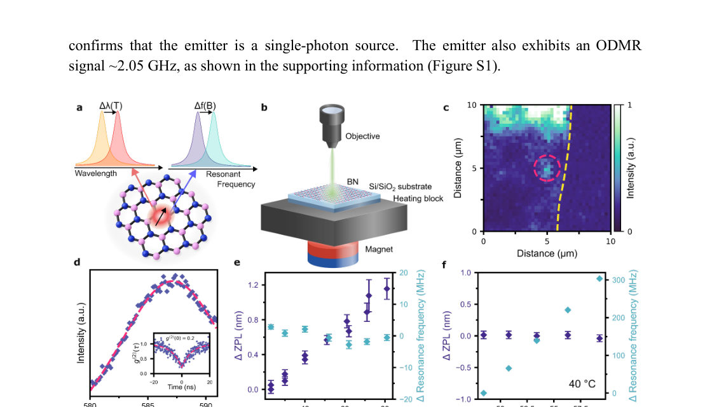
<figcaption class="paper-figure-caption"><b>Fig 1.</b> Figure 1. Concept demonstration of simultaneous sensing of temperature and magnetic field using a quantum emitter in hBN. (a) A graphic depiction of a temperature-dependent PL spectra and a magnetic field-dependent ODMR resonant frequency. (b) Sample stage schematic with labeled components. (c) Normalized PL map showing the hBN flake edge marked with yellow, and an emitter marked by red. (d) The PL spectra of the emitter marked in (c), the emission has a wavelength of 587 nm and a ~15 nm FWHM. Inset: Autocorrelation of PL emission, with a g2(0) = 0.2. (e) Change in ZPL position (purple) and resonant frequency (cyan) as a function of temperature on the heating block. (f) Change in ZPL...</figcaption>
</figure>
<figure class="paper-figure-card">
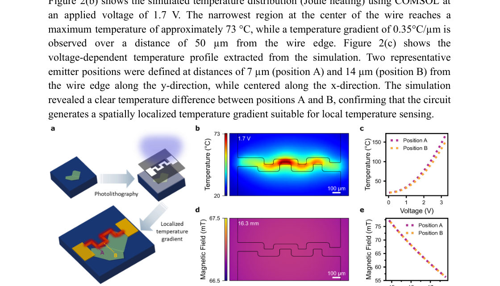
<figcaption class="paper-figure-caption"><b>Fig 2.</b> Figure 2. Microscale heating circuit and resulting Joule-effect simulation. (a) Illustration of microscale heating circuit fabrication. Consisting of the flake selection followed by the photolithography step. Photoresist has been spun over the substrate and is exposed to patterned UV light. A voltage is applied to the circuit and a localized temperature gradient is created. The red line indicates the heating circuit. Position A (orange) and B (magenta) indicate emitter positions closer and farther from the heating region, respectively. (b) Simulated temperature distribution of the circuit heating at 1.7 volts. (c) Simulated temperature recorded from position A (orange) and position B...</figcaption>
</figure>
<figure class="paper-figure-card">
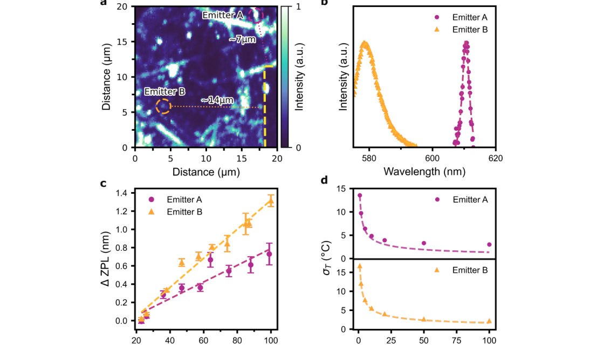
<figcaption class="paper-figure-caption"><b>Fig 3.</b> Figure 3. Characterization of emitters used for simultaneous sensing. (a) Normalized PL map with hBN flake edge marked in yellow, Emitters A (magenta circle) and B (orange triangle) are marked with a circle. The area enclosed by the yellow lines is the location of the circuit. The distances from the wire to Emitter A and B are printed on the map and are ~7 and ~14 µm, respectively. (b) PL emission spectra for Emitters A (B) located at wavelengths 610 nm (579 nm), with a FWHM of ~2.8nm (~9.6 nm). (c) The change in ZPL position as a function of temperature on the heating block for Emitters A and B, with linear fits of 0.0092 nm/°C and 0.016 nm/°C, respectively. (d) Temperature uncertainty of...</figcaption>
</figure>
<figure class="paper-figure-card">
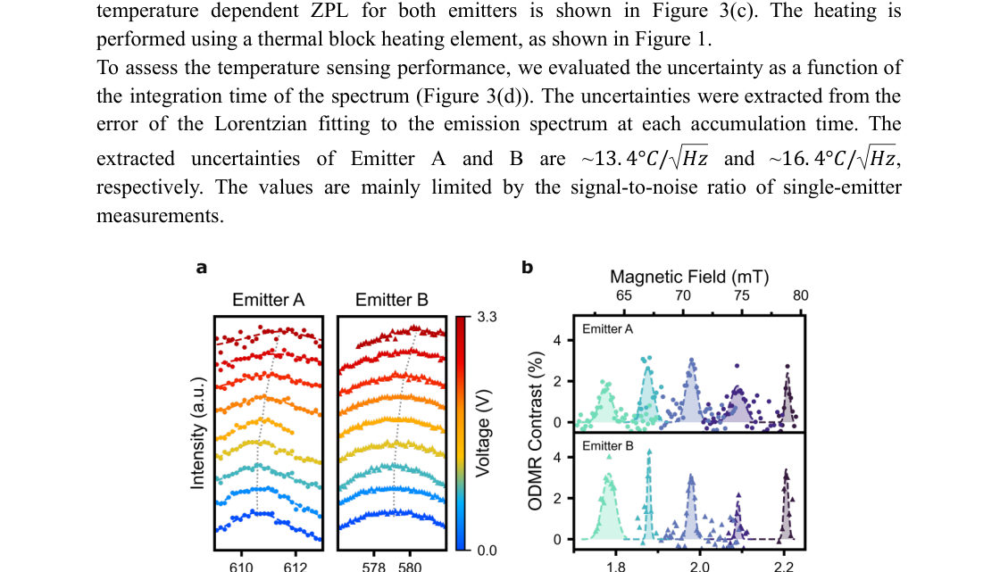
<figcaption class="paper-figure-caption"><b>Fig 4.</b> Figure 4. Dual sensing characteristics of Emitters A and B. (a) Emission spectra for Emitters A and B over the applied voltage range of 0 to 3.3 V. The grey line marks the location of the fitted ZPL peak positions. (b) ODMR spectra for Emitters A and B recorded at different magnetic field strengths. The combined, simultaneous temperature and magnetic field sensing for Emitters A and B is shown in Figure 4. Both emitters&#x27; thermal response is depicted in Figure 4a. Over the applied voltage range of 0 V to 3.3 V, Emitters A (B) experienced ZPL redshifts of ~0.82 nm (~1.2 nm), corresponding to a local temperature of ~112°C (~101°C), respectively (Figure S4). The ODMR signal was independent from...</figcaption>
</figure>
</div>

<p><strong>Summary.</strong> The research presents a robust platform for multifunctional quantum sensing using single spins in hexagonal boron nitride (hBN). By independently monitoring the shift of the Zero-Phonon Line (ZPL) with temperature and the Optically Detected Magnetic Resonance (ODMR) frequency with magnetic field, the authors achieve simultaneous, cross-talk-free measurement of both parameters on a chip. This establishes hBN as a promising material for next-generation quantum sensing devices.</p>
<p><strong>Why it may be interesting.</strong> This work directly addresses the development of solid-state quantum sensors by engineering an environment (hBN/microcircuit) that allows for orthogonal readout channels, which is crucial for building complex quantum measurement devices.</p>
<details>
<summary>Detailed structure</summary>
<p><strong>Main problem.</strong> The challenge of simultaneously measuring multiple physical parameters, such as temperature and magnetic field, using a single quantum spin sensor due to cross-sensitivity.</p>
<p><strong>Main result.</strong> The authors successfully demonstrated independent dual sensing by showing that the Zero-Phonon Line (ZPL) position shifts with temperature while the Optically Detected Magnetic Resonance (ODMR) frequency changes predictably only with the applied magnetic field.</p>
<p><strong>Method.</strong> They utilized single quantum emitters hosted in hexagonal boron nitride (hBN) placed on a chip equipped with an integrated microheating circuit to create controlled thermal gradients, while simultaneously measuring both ZPL and ODMR spectra.</p>
<p><strong>Model / system.</strong> The system involves optically addressable spin defects in hBN. The sensing relies on two distinct physical responses: the temperature dependence of the ZPL position ($\lambda$ vs $T$) and the magnetic field dependence of the ODMR frequency ($
u_{ ext{ODMR}}$ vs $\mathbf{B}$).</p>
<p><strong>Key observables.</strong> ZPL redshift ($\lambda$ vs $T$), ODMR resonance frequency ($
u_{ ext{ODMR}}$ vs $\mathbf{B}$), single-photon emission ($g^{(2)}(	au)$).</p>
<p><strong>Important parameters / regimes.</strong> Temperature uncertainty limits ($\sim 13.4^\circ	ext{C}/\sqrt{	ext{Hz}}$); Magnetic field sensitivity ($\sim 3.0 \mu	ext{T}/\sqrt{	ext{Hz}}$).</p>
<p><strong>Assumptions / limitations.</strong> The magnetic field is assumed uniform across the measured area, although localized temperature gradients can be generated via Joule heating.</p>
<p><strong>Figures summary.</strong> Figure 1 illustrates the concept of dual sensing using ZPL and ODMR shifts. Figure 2 details the microscale heating circuit fabrication and simulated temperature/magnetic field distributions. Figure 3 characterizes the emitters and shows ZPL vs T fits, while Figure 4 presents the independent thermal (ZPL) and magnetic (ODMR) responses.</p>
<p><strong>Paper structure.</strong> The paper establishes the need for multifunctional quantum sensors; it details the experimental setup using hBN on a microheater; it presents measurements showing the distinct temperature dependence of ZPL and the field dependence of ODMR; finally, it demonstrates simultaneous local sensing capability.</p>
</details>
<details>
<summary>Abstract</summary>
<p>Nanoscale thermometry and magnetometry are in high demand across a wide range of scientific and technological applications. In this context, optically addressable spins in solids have emerged at the forefront of on-chip quantum sensing. However, simultaneous quantum sensing of multiple parameters (e.g., temperature and magnetic field) using the same spin sensor remains challenging due to cross-sensitivity to multiple physical quantities. Here, we demonstrate independent dual sensing of temperature and magnetic field using single quantum emitters in hexagonal boron nitride (hBN). We experimentally verify the independent response of the zero-phonon line (ZPL) position to temperature and of optically detected magnetic resonance (ODMR) to magnetic fields. Furthermore, we demonstrate local temperature sensing of a microcircuit while simultaneously measuring an external magnetic field. Our results establish quantum emitters in hBN as a robust platform for multifunctional quantum sensing under realistic operating conditions.</p>
</details>
<p><sub><a href="#top">↑ back to top</a></sub></p>

<p><a id="paper-2606.20309"></a></p>
<h3 id="fractional-excitations-in-kitaev-quasi-one-dimensional-chain"><a href="http://arxiv.org/abs/2606.20309v1">Fractional excitations in Kitaev quasi-one-dimensional chain</a></h3>
<p><strong>Authors:</strong> Ritwika Majumder<br>
<strong>Type:</strong> theory · <strong>Category:</strong> strongly correlated electrons · <strong>PDF:</strong> <a href="https://arxiv.org/pdf/2606.20309v1">https://arxiv.org/pdf/2606.20309v1</a><br>
<strong>Analysis basis:</strong> full PDF text, analyzed in chunks
<strong>Topic relevance:</strong> <code>analog quantum simulation</code> <strong>3/5</strong> · <code>exotic spin models in light-matter</code> <strong>3/5</strong> · <code>Frenkel-Kontorova</code> <strong>1/5</strong> · <code>entanglement &amp; information structure</code> <strong>1/5</strong> · <code>methods for driven-dissipative</code> <strong>1/5</strong></p>
<div class="figure-strip-hint">↔ Scroll figures horizontally</div>
<div class="paper-figures-scroll">
<figure class="paper-figure-card">
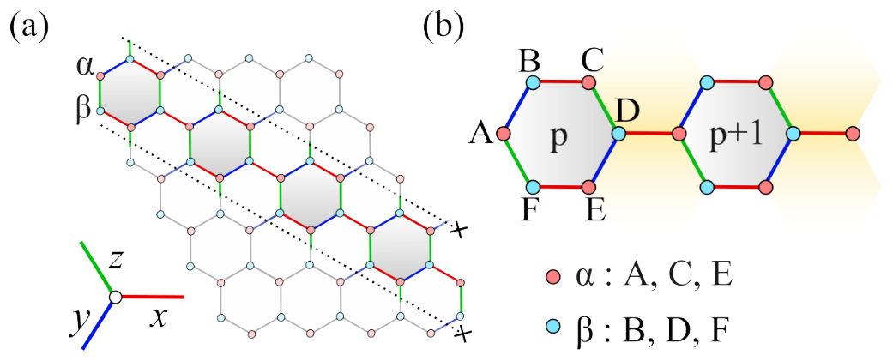
<figcaption class="paper-figure-caption"><b>Fig 1.</b> FIG. 1. (a) Schematic representation of the quasi–one–dimensional hexagonal chain layer embedded within the honeycomb geometry. Each hexagonal plaquette (grey) consists of 3 pairs of two sub-lattice classes connected by three different near- est–neighbor bonds. Red, blue, and green bonds denote anisotropic spin couplings SxSx, SySy, and SzSz, respectively. (b) Isolated chain segment comprising plaquettes p and p+1, where each plaquette (unit cell) contains six sub-lattice sites grouped into two distinct classes as indicated.</figcaption>
</figure>
<figure class="paper-figure-card">
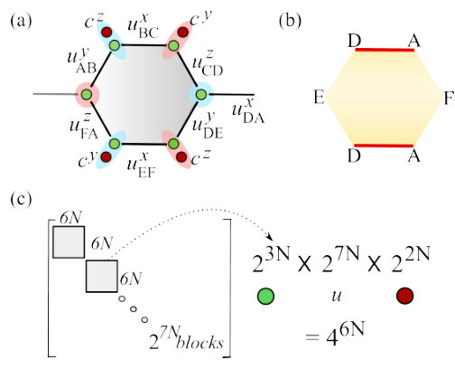
<figcaption class="paper-figure-caption"><b>Fig 2.</b> FIG. 2. (a) Elementary hexagon with bond variables uαβ in- dicated on each link. The itinerant Majorana fermions are shown as green circles, while the non–dynamic Majoranas are represented by brown circles. On each bond, a gauge variable uαβ is defined. (b) Illustration of incomplete plaquettes in- verted relative to the hexagon, where the DA bond appears twice within the plaquette structure. (c) For a chain of N unit cells, the Hamiltonian dimension is 6N ×6N for a fixed config- uration of uαβ. Each unit cell contains seven bonds, leading to 27N distinct Hamiltonian blocks. In addition, the 22N de- generacy arising from the non–dynamic Majoranas (colored brown) further fragments the...</figcaption>
</figure>
<figure class="paper-figure-card">
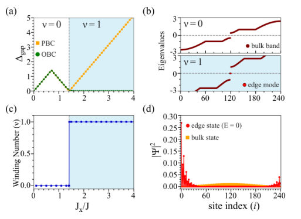
<figcaption class="paper-figure-caption"><b>Fig 3.</b> FIG. 4. Topological characterization of the quasi–one–dimensional chain. (a) Band gaps at the chemical potential are shown for periodic boundary conditions (yel- low) and open boundary conditions (green). (b) Eigenvalue spectra under OBC: the upper panel corresponds to the topologically trivial regime, while the lower panel illustrates the chiral topological phase with edge states pinned at the chemical potential. (c) Winding number (ν) plotted as a function of Jx, serving as the topological invariant and con- firming the phase transition. (d) Probability distribution of the eigenstates closest to the chemical potential for the same parameter choice as in (b), highlighting edge...</figcaption>
</figure>
<figure class="paper-figure-card">
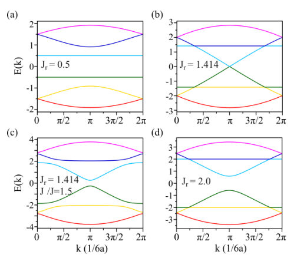
<figcaption class="paper-figure-caption"><b>Fig 4.</b> FIG. 3. Majorana band structure for four representative val- ues of Jx with Jy = Jz = J. (a) Jr = Jx/J = 0.5: the flat bands are separated and lie closest to the chemical potential. (b) Jr = √</figcaption>
</figure>
<figure class="paper-figure-card">
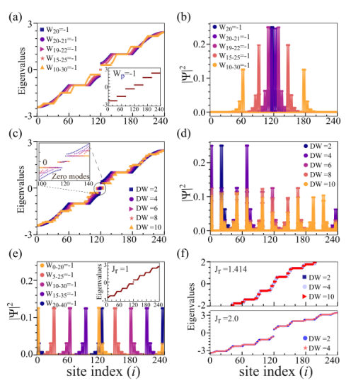
<figcaption class="paper-figure-caption"><b>Fig 5.</b> FIG. 5. Wp1−p2 = −1 represents a negative plaquette do- main from p1-th to p2-th plaquette on a positive plaquette background. (a) The evolution of the spectrum with 2 zero- energy states as we increase the number of negative plaquettes in a single domain. (b) The corresponding probability of the zero modes. (c) and (d) describe the evolution of the spec- trum and the probability of zero modes. respectively, as we increase the number of domains of negative plaquettes in a lattice. The corresponding eigenvalues in (a) and (c) show isolated modes for Jr = 1. (e) The probability distribution of zero modes (shown in the inset) with the translation of plaquette modes with p1 and p2. (f) The...</figcaption>
</figure>
</div>

<p><strong>Summary.</strong> This work analyzes a quasi-1D chain derived from the Kitaev honeycomb model to study its topological phases. The authors find a transition controlled by anisotropy, leading to symmetry-protected zero-energy edge modes in the topological phase. Key diagnostics include measuring the winding number and observing characteristic broad continua in the spin correlation function.</p>
<p><strong>Why it may be interesting.</strong> It provides a concrete, reduced-dimensional model exhibiting chiral topological order and fractionalization, offering clear spectroscopic fingerprints that can be compared against experimental measurements on quantum materials or engineered spin systems.</p>
<details>
<summary>Detailed structure</summary>
<p><strong>Main problem.</strong> The study investigates fractional excitations and topological properties within a quasi-one-dimensional spin chain derived from truncating the 2D Kitaev honeycomb model.</p>
<p><strong>Main result.</strong> The system exhibits a chiral topological phase transition characterized by the emergence of zero-energy edge modes in the topological regime, alongside broad continua indicative of fractionalized excitations.</p>
<p><strong>Method.</strong> The analysis employs Majorana fermion mapping to solve the Hamiltonian and uses DMRG simulations to compute the dynamical spin correlation function for spectral diagnostics.</p>
<p><strong>Model / system.</strong> The model is a quasi-1D Kitaev-like spin chain built from coupled hexagonal plaquettes, retaining essential features of the 2D Kitaev liquid. It is analyzed using an anisotropic nearest-neighbor coupling Hamiltonian.</p>
<p><strong>Key observables.</strong> Zero-energy edge modes (protected by chiral symmetry), quantized winding number ($
u$), and broad continua in the dynamical spin correlation function $S_{+}(k, \omega)$.</p>
<p><strong>Important parameters / regimes.</strong> The anisotropy parameter ($J_r$) controls the topological phase transition at a critical value of $\sqrt{2}$.</p>
<p><strong>Assumptions / limitations.</strong> The analysis assumes that truncating the honeycomb lattice yields an integrable model solvable via Majorana fermion representation and that fixing gauge configurations allows diagonalization.</p>
<p><strong>Figures summary.</strong> Figures illustrate the schematic chain structure, the band dispersion showing gap closing at $J_r = \sqrt{2}$, and the emergence of zero-energy edge states in the topological regime under open boundary conditions.</p>
<p><strong>Paper structure.</strong> The paper progresses from defining the quasi-1D Hamiltonian and its conserved quantities to mapping it onto Majorana fermions. It then uses topological invariants (winding number) and numerical simulations (DMRG) to characterize the phase transition, culminating in spectral analysis of fractionalized excitations.</p>
</details>
<details>
<summary>Abstract</summary>
<p>The Kitaev honeycomb model has attracted significant interest due to its quantum spin liquid ground state, fractionalized Majorana excitations, and topological properties. Motivated by these features, we introduce a quasi-one-dimensional Kitaev-like spin chain derived from a truncated honeycomb geometry. The resulting Majorana band structure contains both dispersive and flat bands, with a gap closing at a critical anisotropy that separates trivial and chiral topological phases. Under open boundary conditions, the topological regime hosts zero-energy edge modes protected by chiral symmetry, placing the system in the BDI symmetry class with a quantized winding number. In the excited spectrum, localized plaquette modes emerge near zero energy and can be tuned by introducing domains of negative plaquettes. The dynamical spin correlation function reveals broad continua associated with fractionalized excitations, together with characteristic low-energy spectral weight from edge Majorana modes. These features distinguish the present system from conventional Heisenberg spin chains and provide experimentally relevant fingerprints of chiral topological order. Our model thus establishes a conceptual bridge between the two-dimensional Kitaev spin liquid and Kitaev's one-dimensional quantum wire.</p>
</details>
<p><sub><a href="#top">↑ back to top</a></sub></p>

<p><a id="paper-2606.20501"></a></p>
<h3 id="fidelity-bounds-for-adiabatic-gates-and-other-quantum-operations-with-time-dependent-dissipation"><a href="http://arxiv.org/abs/2606.20501v1">Fidelity bounds for adiabatic gates and other quantum operations with time-dependent dissipation</a></h3>
<p><strong>Authors:</strong> Simon Pettersson Fors, Aniket Patel, Anton Frisk Kockum, Tahereh Abad<br>
<strong>Type:</strong> theory · <strong>Category:</strong> quantum information and computing · <strong>PDF:</strong> <a href="https://arxiv.org/pdf/2606.20501v1">https://arxiv.org/pdf/2606.20501v1</a><br>
<strong>Analysis basis:</strong> full PDF text, analyzed in chunks
<strong>Topic relevance:</strong> <code>methods for driven-dissipative</code> <strong>3/5</strong> · <code>Keldysh / 2PI / non-Gaussian methods</code> <strong>2/5</strong> · <code>correlated / nonlocal dissipation</code> <strong>1/5</strong> · <code>driven-dissipative phase transition</code> <strong>1/5</strong> · <code>non-equilibrium dynamics</code> <strong>1/5</strong></p>
<div class="figure-strip-hint">↔ Scroll figures horizontally</div>
<div class="paper-figures-scroll">
<figure class="paper-figure-card">
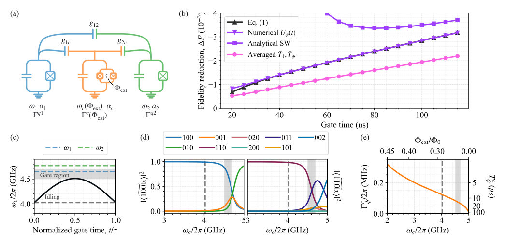
<figcaption class="paper-figure-caption"><b>Fig 1.</b> Figure 1. Fidelity reduction for an adiabatic CZ gate in a two-qubit-coupler system. (a) Circuit schematic showing two fixed- frequency qubits (blue, green) coupled via a tunable coupler (orange). (b) Fidelity reduction ∆F = ¯F −1 as a function of gate time, evaluated numerically using Eq. (1) (black) and Uψ(t) (purple triangles), analytically using Eq. (16) from SW perturbation (purple squares), and with time-averaged decay rates (pink). (c) Time dependence of the coupler frequency during a sinusoidal flux pulse. (d) Hybridization of eigenstates, shown as the overlap between dressed and bare states as a function of coupler frequency. (e) Flux-noise sensitivity of the coupler, expressed as...</figcaption>
</figure>
</div>

<p><strong>Summary.</strong> This paper develops generalized analytical methods to calculate the fidelity loss of quantum gates when dissipation rates vary with time. By applying these techniques to superconducting qubits, they provide a quantitative measure showing that dynamic flux-dependent noise significantly limits gate performance in tunable architectures.</p>
<p><strong>Why it may be interesting.</strong> This work provides essential theoretical tools for quantifying error budgets in modern tunable quantum hardware by rigorously accounting for how noise sources change over time during computation.</p>
<details>
<summary>Detailed structure</summary>
<p><strong>Main problem.</strong> The core problem is deriving rigorous fidelity bounds for quantum operations, particularly adiabatic gates, when the system undergoes time-dependent dissipation.</p>
<p><strong>Main result.</strong> The authors generalize previous analytical formulae to incorporate time-varying dissipation rates, demonstrating that flux-dependent noise significantly degrades the fidelity of superconducting CZ gates.</p>
<p><strong>Method.</strong> They employ perturbative expansions (like Dyson series) on the Lindblad master equation formalism and utilize frame transformations to simplify the calculation of the average gate fidelity ($ar{F}$).</p>
<p><strong>Model / system.</strong> The work models quantum computing platforms, specifically using a three-mode superconducting circuit with tunable couplers. The evolution is governed by a time-dependent Hamiltonian and a Lindblad master equation incorporating time-dependent dissipation rates $\Gamma_k(t)$.</p>
<p><strong>Key observables.</strong> Average Gate Fidelity ($ar{F}$), fidelity reduction rate ($    ext{d}ar{F}/   ext{dt}$), leakage metrics ($\Lambda_{ ext{total}}$).</p>
<p><strong>Important parameters / regimes.</strong> Time-dependent dissipation rates $\Gamma_k(t)$, coupling strengths ($g_{ij}$), detunings ($\Delta_{ic}$), and the adiabatic evolution time scale ($  au$).</p>
<p><strong>Assumptions / limitations.</strong> The analysis relies on weak dissipation approximations (perturbative expansion) and, in some sections, assumes that the computational basis aligns with the instantaneous eigenstates of the Hamiltonian.</p>
<p><strong>Figures summary.</strong> Figures illustrate the setup, comparing fidelity decay using different methods, showing coupler frequency modulation effects, eigenstate hybridization patterns, and quantifying flux-noise sensitivity.</p>
<p><strong>Paper structure.</strong> The paper builds from generalizing the master equation to include time-dependent rates, deriving the general first-order fidelity formula, applying this to adiabatic evolution via frame transformations, and finally demonstrating the results on a superconducting CZ gate model.</p>
</details>
<details>
<summary>Abstract</summary>
<p>As quantum-computing platforms are susceptible to noise, the fidelity of quantum operations is limited by decoherence. Understanding this limitation is crucial for building utility-scale quantum processors. In previous works [Phys. Rev. Lett. 129, 150504 (2022); Quantum 9, 1684 (2025)], we presented analytical formulae for the average gate fidelity of multi-qubit operations under static Markovian noise processes, including operations that temporarily leave the computational subspace. However, some quantum-computing architectures dynamically modulate qubit or coupler frequencies to implement two-qubit gates, e.g., baseband flux gates; such modulation can lead to dissipation rates varying in time. In this Letter, we therefore generalize the fidelity-reduction formulae to encompass time-dependent dissipation. Applying our generalized formula, we obtain a fidelity bound for adiabatic operations and demonstrate that flux-dependent noise sensitivity, combined with qubit-coupler hybridization, significantly reduces the fidelity of adiabatic controlled-Z (CZ) gates in superconducting quantum computers. Our work thus provides essential theoretical tools for evaluating error budgets and optimizing the design of quantum operations in tunable quantum-computing architectures, and may also find applications in quantum-sensing and quantum-communication protocols that are affected by time-dependent dissipation.</p>
</details>
<p><sub><a href="#top">↑ back to top</a></sub></p>

<p><a id="paper-2606.19664"></a></p>
<h3 id="quantum-dynamics-from-lax-pair-theory-a-reconstruction-from-spectrum-preservation"><a href="http://arxiv.org/abs/2606.19664v1">Quantum Dynamics from Lax Pair Theory: A Reconstruction from Spectrum Preservation</a></h3>
<p><strong>Authors:</strong> Péter Szabó<br>
<strong>Type:</strong> theory · <strong>Category:</strong> other · <strong>PDF:</strong> <a href="https://arxiv.org/pdf/2606.19664v1">https://arxiv.org/pdf/2606.19664v1</a><br>
<strong>Analysis basis:</strong> full PDF text, analyzed in chunks
<strong>Topic relevance:</strong> <code>quantum measurements</code> <strong>3/5</strong> · <code>measurement-induced transitions</code> <strong>2/5</strong> · <code>driven-dissipative phase transition</code> <strong>1/5</strong> · <code>entanglement &amp; information structure</code> <strong>1/5</strong></p>
<div class="figure-strip-hint">↔ Scroll figures horizontally</div>
<div class="paper-figures-scroll">
<figure class="paper-figure-card">
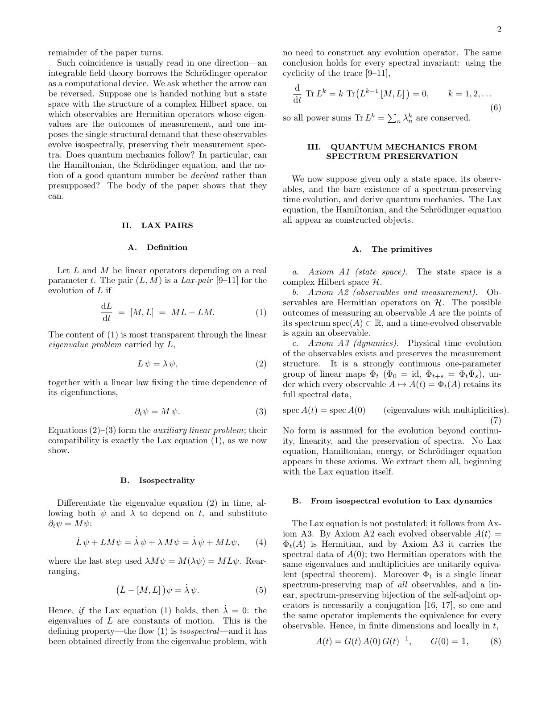
<figcaption class="paper-figure-caption"><b>Fig 1.</b> Low-resolution page preview, page 2</figcaption>
</figure>
<figure class="paper-figure-card">
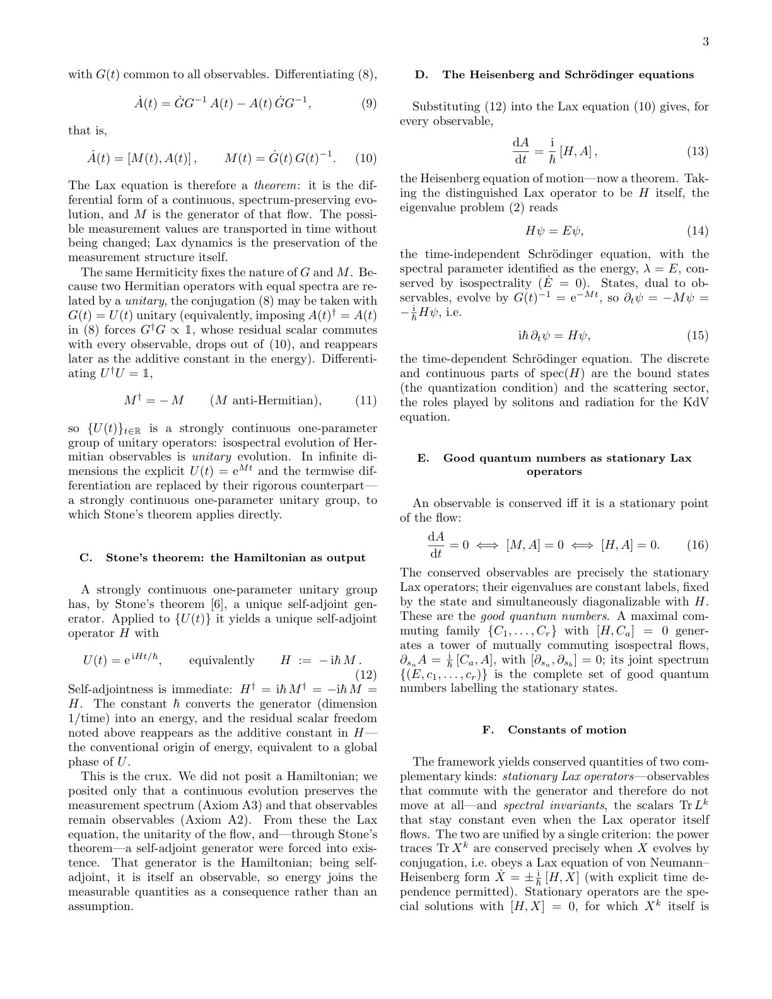
<figcaption class="paper-figure-caption"><b>Fig 2.</b> Low-resolution page preview, page 3</figcaption>
</figure>
<figure class="paper-figure-card">
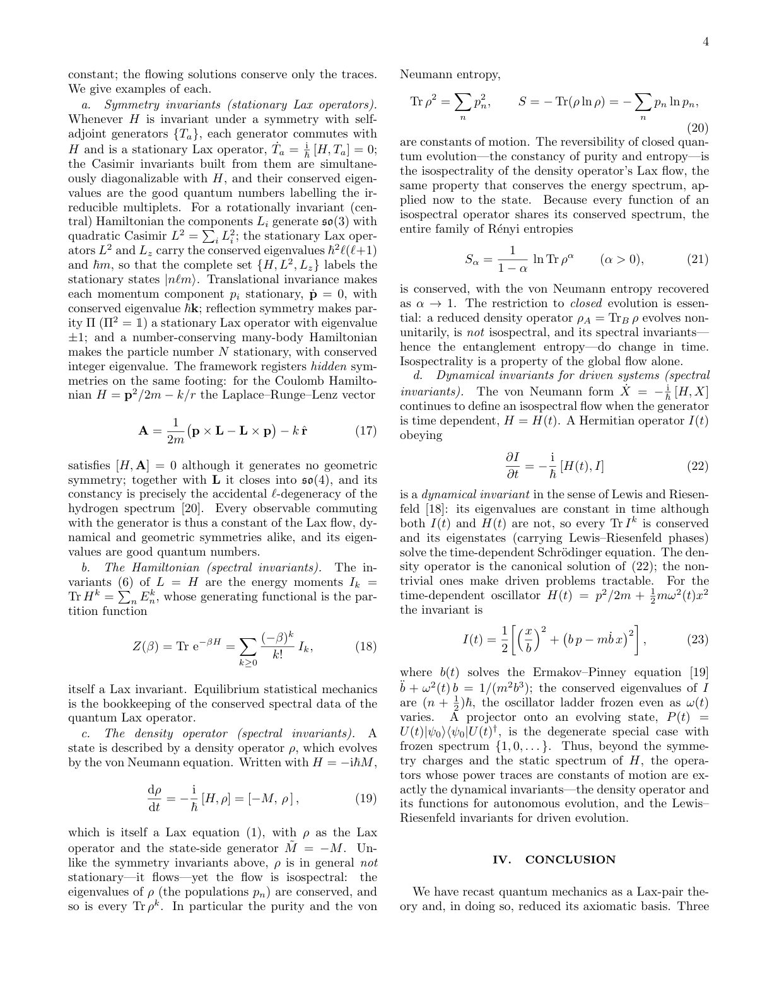
<figcaption class="paper-figure-caption"><b>Fig 3.</b> Low-resolution page preview, page 4</figcaption>
</figure>
<figure class="paper-figure-card">
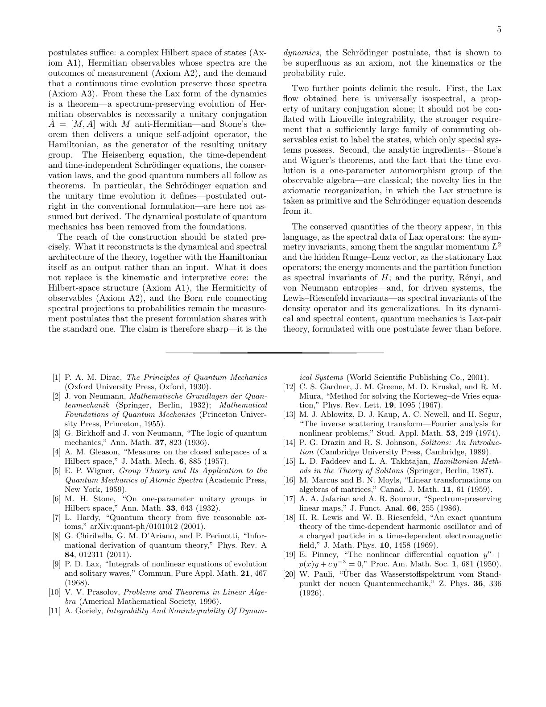
<figcaption class="paper-figure-caption"><b>Fig 4.</b> Low-resolution page preview, page 5</figcaption>
</figure>
</div>

<p><strong>Summary.</strong> This paper reconstructs quantum dynamics by starting only with the axioms of Hilbert spaces and the principle that time evolution must preserve the possible outcomes (spectra) of measurements. By applying Lax pair theory, the authors prove that this single assumption is enough to necessitate the existence of a Hamiltonian and derive the standard Schrödinger and Heisenberg equations as necessary consequences.</p>
<p><strong>Why it may be interesting.</strong> This work provides a highly abstract, foundational re-derivation of quantum mechanics that bypasses the need to postulate the Schrödinger equation directly, focusing instead on symmetries implied by measurement consistency.</p>
<details>
<summary>Detailed structure</summary>
<p><strong>Main problem.</strong> The paper aims to reconstruct the axioms of unitary quantum dynamics from a minimal set of principles, specifically relying on the preservation of measurement outcomes (spectra) during time evolution.</p>
<p><strong>Main result.</strong> It proves that assuming isospectral evolution is sufficient to force the dynamics into the Lax pair form and derive fundamental equations like the Heisenberg equation and Schrödinger equation as theorems rather than postulates.</p>
<p><strong>Method.</strong> The derivation uses axiomatic quantum mechanics combined with the mathematical machinery of Lax pair theory, showing how spectral preservation constrains the time evolution operator to be unitary.</p>
<p><strong>Model / system.</strong> The model is general quantum systems described by a complex Hilbert space ($\mathcal{H}$) and governed by self-adjoint observables. The dynamics are analyzed through the lens of isospectral flow rather than assuming a Hamiltonian from the start.</p>
<p><strong>Key observables.</strong> Observables ($A$), energy eigenvalues ($E$), good quantum numbers, purity ($   ext{Tr}
ho^2$), and von Neumann entropy ($S$).</p>
<p><strong>Important parameters / regimes.</strong> Planck's constant ($\hbar$) and time ($t$).</p>
<p><strong>Assumptions / limitations.</strong> The core assumption is Axiom A3: physical time evolution must preserve the spectrum of every observable, $   ext{spec} \, A(t) =     ext{spec} \, A(0)$.</p>
<p><strong>Paper structure.</strong> The paper builds logically by establishing axioms (Hilbert space, Hermitian observables, isospectral evolution), deriving the Heisenberg equation via spectral theory, and finally using Stone's theorem to identify the Hamiltonian as the generator of the unitary flow.</p>
</details>
<details>
<summary>Abstract</summary>
<p>We reconstruct unitary quantum dynamics from a minimal axiomatic foundation built on Hilbert-space observables and isospectral evolution. The only dynamical assumption is that physical time evolution is a continuous one-parameter flow of Hermitian observables that preserves their spectra, i.e. the possible outcomes of measurement. We show that this assumption is already sufficient to force the Lax form of quantum dynamics. The Heisenberg equation, the time-dependent and time-independent Schrödinger equations, conservation laws, and good quantum numbers then follow as theorems rather than postulates. In this formulation, Lax pair theory supplies the missing dynamical bridge between the measurement structure of a Hilbert space and standard quantum evolution: the Hamiltonian is not assumed, but emerges as the generator required for an isospectral observable flow.</p>
</details>
<p><sub><a href="#top">↑ back to top</a></sub></p>

<p><a id="paper-2606.20296"></a></p>
<h3 id="all-in-all-out-pyrochlore-iridates-as-noncollinear-spin-orbit-coupled-counterparts-of-altermagnets"><a href="http://arxiv.org/abs/2606.20296v1">All-In-All-Out Pyrochlore Iridates as Noncollinear Spin-Orbit Coupled Counterparts of Altermagnets</a></h3>
<p><strong>Authors:</strong> Yang Yang, Turan Birol, Rafael M. Fernandes, Natalia B. Perkins<br>
<strong>Type:</strong> theory · <strong>Category:</strong> strongly correlated electrons · <strong>PDF:</strong> <a href="https://arxiv.org/pdf/2606.20296v1">https://arxiv.org/pdf/2606.20296v1</a><br>
<strong>Analysis basis:</strong> full PDF text, analyzed in chunks
<strong>Topic relevance:</strong> <code>exotic spin models in light-matter</code> <strong>3/5</strong> · <code>Keldysh / 2PI / non-Gaussian methods</code> <strong>1/5</strong> · <code>analog quantum simulation</code> <strong>1/5</strong> · <code>spintronics-quantum-optics interface</code> <strong>1/5</strong></p>
<div class="figure-strip-hint">↔ Scroll figures horizontally</div>
<div class="paper-figures-scroll">
<figure class="paper-figure-card">
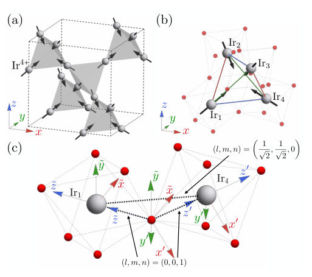
<figcaption class="paper-figure-caption"><b>Fig 1.</b> FIG. 1. (a) Ir4+ ions on the pyrochlore lattice with the all- in-all-out (AIAO) magnetic configuration. (b) The tetrahe- dron unit cell of the pyrochlore lattice consists of four Ir4+</figcaption>
</figure>
<figure class="paper-figure-card">
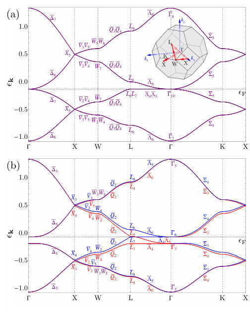
<figcaption class="paper-figure-caption"><b>Fig 2.</b> FIG. 2. Pseudospin-splitting of the band structure of py- rochlore iridates in the presence of AIAO order. (a) Band structure along high-symmetry lines (inset shows the path taken in momentum space) without magnetic ordering com- puted with U = 0. The bands are labeled by irreducible co-representations (co-irreps) of the magnetic space group Fd¯3m1′ (No. 227.129), see Table II. The spectrum is at least two-fold degenerate everywhere, and thus colored purple. (b) Corresponding band structure with AIAO order, obtained from the mean-field self-consistent calculation with U = 0.56 in units of pdπ2/∆pd. The two pseudospin-split bands are colored blue and red and labeled according to the induced...</figcaption>
</figure>
<figure class="paper-figure-card">
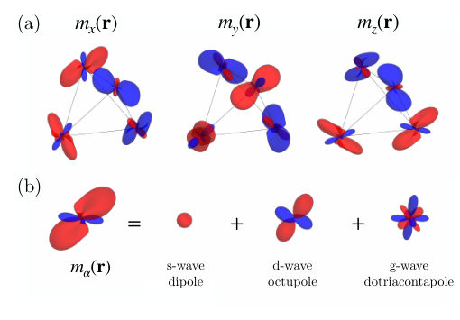
<figcaption class="paper-figure-caption"><b>Fig 3.</b> FIG. 3. (a) Isosurfaces of local magnetization density mα(r) (α = x, y, z) on a tetrahedral unit cell calculated from our mi- croscopic model. (b) Multipole decomposition of mα(r) into s-, d-, and g-wave components (l = 0, 2, 4), corresponding to dipole, octupole, and dotriacontapole moments, respectively.</figcaption>
</figure>
<figure class="paper-figure-card">
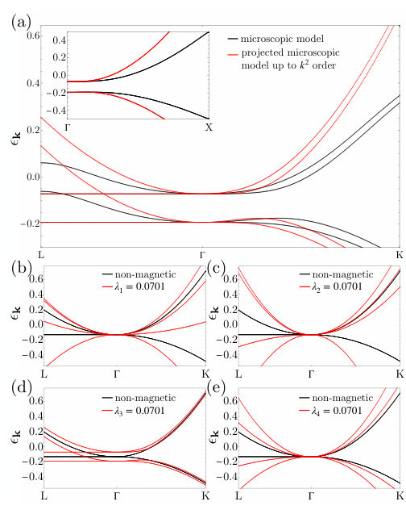
<figcaption class="paper-figure-caption"><b>Fig 4.</b> FIG. 4. (a) Electronic dispersion of the Γ10 subspace along L- Γ-K (Γ-X in the inset), comparing the full microscopic model (black) with its k2-order low-energy projection (red). The projected model accurately captures both the momentum- dependent band splitting induced by the AIAO order near the Γ point and the band splitting at Γ. (b)-(e) Electronic dispersion obtained from the general low-energy Hamiltonian (12), with one coupling λα (α = 1, 2, 3, 4) set to a finite value while all others are set to zero, compared to the non-magnetic case (black). While all four terms lift the Kramers degener- acy and produce momentum-dependent splittings similar to a collinear d-wave altermagnetic...</figcaption>
</figure>
</div>

<p><strong>Summary.</strong> The paper theoretically investigates how the All-In-All-Out (AIAO) magnetic order in pyrochlore iridates realizes a noncollinear analogue of altermagnetism. Using microscopic models and group theory, it demonstrates that this specific octupolar ordering enforces unique symmetry constraints on the electronic band structure. This results in characteristic spin-polarized band splittings at both finite momentum and zero momentum ($\Gamma$ point).</p>
<p><strong>Why it may be interesting.</strong> This work provides a detailed theoretical framework linking complex noncollinear magnetism (octupolar moments) to observable electronic signatures like momentum-dependent band splittings, which is crucial for understanding correlated topological materials.</p>
<details>
<summary>Detailed structure</summary>
<p><strong>Main problem.</strong> To determine if noncollinear magnetic orders can realize the momentum-dependent spin splitting characteristic of altermagnets in strongly SOC materials.</p>
<p><strong>Main result.</strong> The All-In-All-Out (AIAO) state in pyrochlore iridates acts as a noncollinear counterpart to $d$-wave altermagnets, exhibiting both momentum-dependent and zero-momentum band splitting due to symmetry constraints.</p>
<p><strong>Method.</strong> The study employs microscopic tight-binding models combined with rigorous group-theory analysis and mean-field calculations to analyze the electronic structure under specific magnetic symmetries.</p>
<p><strong>Model / system.</strong> The system is pyrochlore iridates ($    ext{A}_2    ext{Ir}_2   ext{O}_7$) featuring $  ext{Ir}^{4+}$ ions with strong SOC, modeled using a $j_{	ext{eff}} = 1/2$ tight-binding Hamiltonian on the pyrochlore lattice.</p>
<p><strong>Key observables.</strong> Spin-splitting patterns in electronic bands (pseudospin splitting), local magnetization density ($\mathbf{m}(\mathbf{r})$) decomposed into multipole moments, and symmetry constraints derived from magnetic space groups.</p>
<p><strong>Important parameters / regimes.</strong> Strong Spin-Orbit Coupling (SOC), the AIAO order parameter transforming as an $ ext{A}_{    ext{g}}^{-2 ext{g}}$ octupolar moment, and hopping parameters ($t, t'$).</p>
<p><strong>Assumptions / limitations.</strong> The analysis assumes strong SOC leading to $j_{	ext{eff}} = 1/2$ physics, and utilizes mean-field approximations for the electronic structure calculations.</p>
<p><strong>Figures summary.</strong> Figures illustrate the AIAO magnetic configuration on a tetrahedron, compare band structures (non-magnetic vs. ordered), show local magnetization density isosurfaces with multipole decomposition, and present low-energy effective Hamiltonians derived from symmetry constraints.</p>
<p><strong>Paper structure.</strong> The paper progresses by first establishing the physical model and the AIAO state's symmetry properties; it then uses group theory to derive the symmetry-allowed low-energy Hamiltonian in the $\Gamma_{10}$ subspace; finally, it calculates the resulting electronic band structure splitting and the real-space multipolar character of the magnetic order.</p>
</details>
<details>
<summary>Abstract</summary>
<p>Altermagnets are collinear magnetically ordered states that exhibit momentum-dependent spin splitting in the absence of net magnetization and spin-orbit coupling (SOC). Related spin-splitting patterns, however, can also emerge in noncollinear magnetic systems with large SOC. Here we show, via a microscopic model, that the all-in-all-out (AIAO) state in pyrochlore iridates constitutes a noncollinear counterpart of a $d$-wave altermagnet stabilized by strong SOC. Starting from a microscopic $j_{\mathrm{eff}} = 1/2$ tight-binding model on the pyrochlore lattice, we demonstrate that electronic interactions favor the AIAO phase and analyze its symmetry properties. We show that the AIAO order parameter transforms as an $A_{2g}^{-}$ octupolar magnetic moment, breaking time-reversal symmetry while preserving inversion and zero net magnetization. Using group-theory analysis and mean-field calculations, we demonstrate that this symmetry enforces both a spin-polarized momentum-dependent lifting of band degeneracies that is similar to that of a collinear $d$-wave cubic altermagnet, but also a band splitting at zero-momentum. We show that the latter feature is captured by a low-energy model similar to the   Luttinger-Kohn model for cubic semiconductors. Our results identify pyrochlore iridates as a platform for noncollinear counterparts of altermagnetism and provide a general symmetry framework for spin-split phenomena in spin-orbit coupled materials.</p>
</details>
<p><sub><a href="#top">↑ back to top</a></sub></p>

<p><a id="paper-2606.20377"></a></p>
<h3 id="charge-imprinting-biases-topology-of-correlated-insulator-in-hbn-aligned-rhombohedral-multilayer-graphene"><a href="http://arxiv.org/abs/2606.20377v1">Charge imprinting biases topology of correlated insulator in hBN-aligned rhombohedral multilayer graphene</a></h3>
<p><strong>Authors:</strong> Lei Qiao, Xin Lu, Fu-Chun Zhang, Jianpeng Liu<br>
<strong>Type:</strong> theory · <strong>Category:</strong> strongly correlated electrons · <strong>PDF:</strong> <a href="https://arxiv.org/pdf/2606.20377v1">https://arxiv.org/pdf/2606.20377v1</a><br>
<strong>Analysis basis:</strong> full PDF text, analyzed in chunks
<strong>Topic relevance:</strong> <code>analog quantum simulation</code> <strong>3/5</strong> · <code>Keldysh / 2PI / non-Gaussian methods</code> <strong>1/5</strong></p>
<div class="figure-strip-hint">↔ Scroll figures horizontally</div>
<div class="paper-figures-scroll">
<figure class="paper-figure-card">
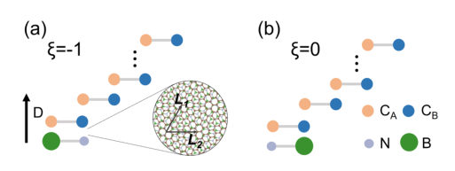
<figcaption class="paper-figure-caption"><b>Fig 1.</b> FIG. 1. Schematic configurations of RMG twisted relative to a single hBN layer, giving rise to a moir´e periodicity. Here, CA and CB denote the A and B sublattices of graphene. In (a), the boron atom of hBN aligns with the A sublattice (CA), labeled as ξ = −1; in (b), the boron atom aligns with the B sublattice (CB), labeled as ξ = 0. Moir´e interface is zoomed in, shown with moir´e superlattice vectors, whose lengths range from approximately 10 to 14 nm depending on the twist an- gle. A positive displacement field is defined as pointing from the moir´e side toward the non-moir´e side; that is, conduction band electrons are pushed away from the moir´e side (“moir´e distant”).</figcaption>
</figure>
<figure class="paper-figure-card">
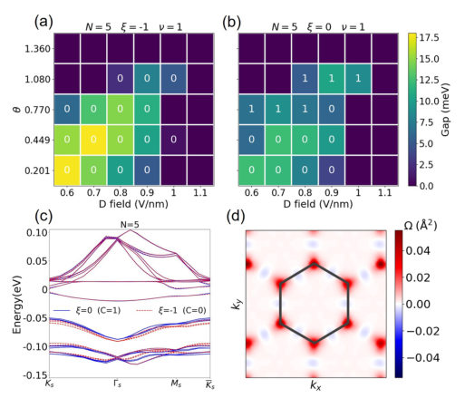
<figcaption class="paper-figure-caption"><b>Fig 2.</b> FIG. 3. Phase diagrams in the θ–D plane for N = 5 moir´e systems at ν = 1 with configurations (a) ξ = −1 and (b) ξ = 0. The color scale represents the global band gap of the HF band structures with dark purple indicating metallic states. Chern number of the first conduction band is indicated if gapped. (c) HF band structures calculated for N = 5 under D = 0.6 V/nm, θ = 0.77◦at ν = 1, including cases with ξ = −1 and ξ = 0. (d) Berry curvature distributions of the occupied bands for N = 5 and ξ = 0. The black hexagonal lines delineate the moir´e Brillouin zone.</figcaption>
</figure>
<figure class="paper-figure-card">
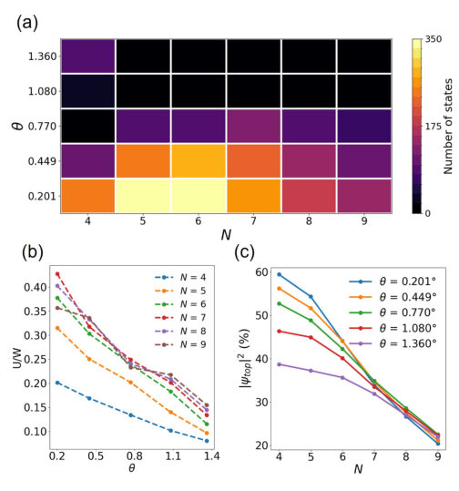
<figcaption class="paper-figure-caption"><b>Fig 3.</b> FIG. 2. (a) Statistical survey of the number of insulating states across the parameter space spanned by D, ν, and ξ. (b) Evolution of the interaction strength, defined as the ratio between the typical Coulomb energy U and the bandwidth W as a function of twist angle for different layer number. Here, U ∼e2/(4πϵ0ϵrLs) and W is the total bandwidth of the three conduction bands in the low energy window for HF calcula- tions. (c) Evolution of the contribution from the top-layer graphene (|ψtop|2) to the active frontier conduction bands as a function of layer number for different twist angles. Both (b) and (c) correspond to the case of (D &gt; 0, ν &gt; 0) averaged over D = 0.6-1.1 V/nm.</figcaption>
</figure>
<figure class="paper-figure-card">
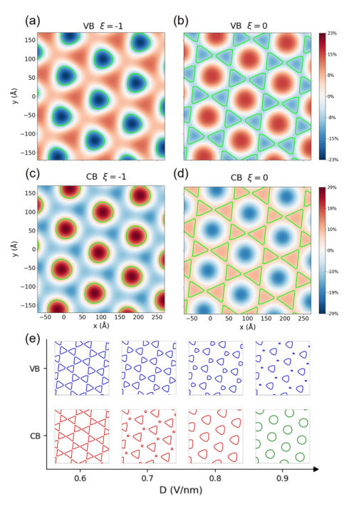
<figcaption class="paper-figure-caption"><b>Fig 4.</b> FIG. 4. Real-space charge density profile of (a, b) the valence bands and (c, d) the first conduction band for N = 5, ν = 1, θ = 0.77◦. Panels (a, c) and (b, d) represent the charge density with ξ = −1 (C = 0) and ξ = 0 (C = 1), respectively, where D = 0.6 V/nm. The results for D = 0.7-0.9 V/nm are provided in the Supplemental Material [33]. The color code represents charge density fluctuation defined as δρ = (ρ − ¯ρ)/¯ρ0 × 100%, where ρ is the electron density normalized to the number of occupied bands, and ¯ρ0 is the average density of a single electron per moir´e unit-cell. For illustrative purpose, the lines indicate contours at 44% (34%) of the maximum of |δρ|, marking the low-density...</figcaption>
</figure>
</div>

<p><strong>Summary.</strong> The paper investigates the topological phase transitions in multilayer graphene moiré superlattices formed with hBN substrates. Using Hartree-Fock calculations, the authors demonstrate that the alignment of the hBN substrate acts as a remote electrostatic template. This template dictates whether the system stabilizes a topologically non-trivial Chern insulator or a trivial state by shaping the valence band charge texture.</p>
<p><strong>Why it may be interesting.</strong> This research provides a concrete example of how substrate engineering (hBN alignment) can exert long-range control over emergent quantum topological properties (Chern insulators) in 2D materials, relevant to designing novel correlated electronic devices.</p>
<details>
<summary>Detailed structure</summary>
<p><strong>Main problem.</strong> To understand how charge imprinting biases the topology of correlated insulators in rhombohedral multilayer graphene (RMG) when aligned with hexagonal boron nitride (hBN), particularly when active carriers are displaced from the moiré interface.</p>
<p><strong>Main result.</strong> The hBN alignment dictates the topological state: specific alignments favor a honeycomb-like charge network associated with Chern insulators, while others favor triangular patterns linked to trivial insulators. This establishes valence-band charge textures as a remote control mechanism for correlated topology.</p>
<p><strong>Method.</strong> Systematic Hartree-Fock (HF) calculations are performed across various parameters (layer number, twist angle, alignment type) to map out the correlated phase diagram and analyze real-space charge densities.</p>
<p><strong>Model / system.</strong> The system is RMG aligned with hBN, modeled using a continuum Hamiltonian incorporating moiré potentials ($V_{	ext{hBN}}$). The electronic structure is analyzed via HF calculations that treat electron-electron interactions self-consistently.</p>
<p><strong>Key observables.</strong> Topological state (Chern number $C=0$ vs $C=1$), real-space charge density patterns (honeycomb vs. triangular), and the energy difference ($\Delta E$) between competing topological phases.</p>
<p><strong>Important parameters / regimes.</strong> Layer number ($N \simeq 6$), small twist angles ($   heta$), filling factor ($
u=1$), and the hBN alignment parameter ($\xi$).</p>
<p><strong>Assumptions / limitations.</strong> The analysis relies on HF approximations, treating long-range Coulomb interactions via a remote electrostatic template mechanism. The study assumes specific alignments dictate charge texture.</p>
<p><strong>Figures summary.</strong> Figures show phase diagrams mapping topological states across $    heta$ and $D$, alongside real-space charge density profiles comparing the honeycomb pattern ($\xi=0$) to the triangular pattern ($\xi=-1$).</p>
<p><strong>Paper structure.</strong> The work progresses by first defining the Hamiltonian incorporating moiré potentials, then systematically varying parameters ($N, 	heta, D, \xi$) using HF calculations. The core argument builds from observing that charge imprinting dictates topology in the $    ext{moiré}$-distant regime.</p>
</details>
<details>
<summary>Abstract</summary>
<p>Rhombohedral multilayer graphene aligned with hexagonal boron nitride (RMG-hBN) hosts correlated Chern phases, but the microscopic role of hBN stacking remains unclear, especially when the active carriers are displaced away from the moiré interface. Using Hartree-Fock calculations over layer numbers, twist angles, displacement fields, fillings, and hBN alignments, we show that correlated insulators are most robust at small twist angles and intermediate layer number ($N\simeq 6$), where bandwidth suppression is balanced by layer delocalization of the wavefunctions of the active carriers. Under moiré-distant conditions at filling $ν=1$, the topology of the insulating state is strongly biased by charge imprinting: the hBN alignment shapes the occupied valence-band charge texture near the interface via moiré potential, which acts through long-range Coulomb interactions as a remote electrostatic template for doped conduction electrons. Depending on the alignment, this template favors either triangular charge localization associated with trivial insulators or honeycomb-like charge networks compatible with Chern insulators. Our results identify valence-band charge textures as a microscopic route by which a remote moiré interface controls correlated topology in multilayer graphene.</p>
</details>
<p><sub><a href="#top">↑ back to top</a></sub></p>

<p><a id="paper-2606.19730"></a></p>
<h3 id="topological-quantum-interferometry"><a href="http://arxiv.org/abs/2606.19730v1">Topological Quantum Interferometry</a></h3>
<p><strong>Authors:</strong> Tianyou Ying, Yufeng Zhou, Chengwei Pan, Ryan Hogan, Ruoyang Zhang, Hui Liu, Shining Zhu, Xiaoqin Gao<br>
<strong>Type:</strong> theory · <strong>Category:</strong> quantum information and computing · <strong>PDF:</strong> <a href="https://arxiv.org/pdf/2606.19730v1">https://arxiv.org/pdf/2606.19730v1</a><br>
<strong>Analysis basis:</strong> full PDF text, analyzed in chunks
<strong>Topic relevance:</strong> <code>interference shaping light</code> <strong>3/5</strong> · <code>entanglement &amp; information structure</code> <strong>1/5</strong></p>
<div class="figure-strip-hint">↔ Scroll figures horizontally</div>
<div class="paper-figures-scroll">
<figure class="paper-figure-card">
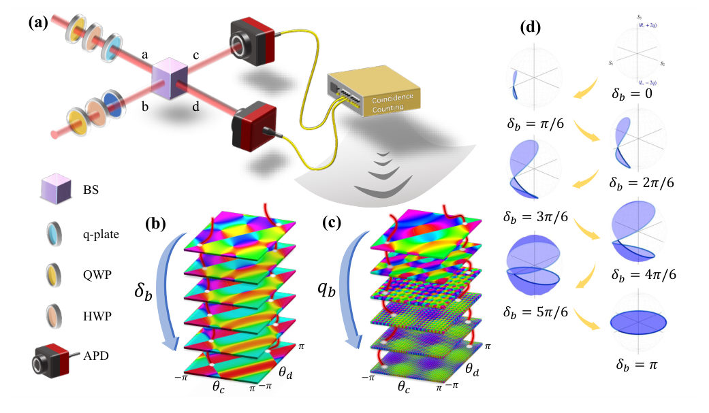
<figcaption class="paper-figure-caption"><b>Fig 1.</b> FIG. 1. Conceptual framework of topological quantum interferometry. (a) Two structured photons, prepared using quarter-wave plates (QWPs), half-wave plates (HWPs), and independent q-plates (qa, δa and qb, δb) in input paths a and b, respectively, interact at a 50:50 beamsplitter (BS) and undergo Hong-Ou-Mandel (HOM) interference. The spatial dependence of the resulting Bell-state probabilities and interference visibility is monitored in coincidence between avalanche photodiodes (APDs) in the output paths c and d. The overall pattern is dictated by the exchange Berry phase (BPX), which represents an interaction geometric phase arising from the constituent photons’ topologies. (b) Schematic...</figcaption>
</figure>
<figure class="paper-figure-card">
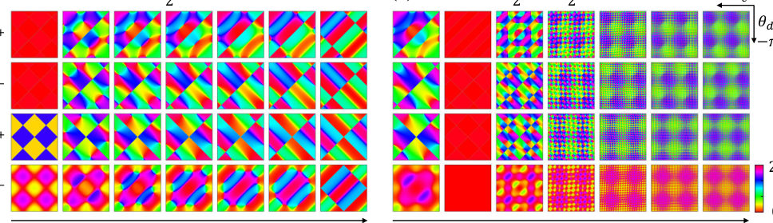
<figcaption class="paper-figure-caption"><b>Fig 2.</b> FIG. 2. Evolution of the phase of the Bell states representing the BPX across the Bell basis. (a) Variation of the detuning parameter δ over the range [0, π] demonstrates that topological structure remains invariant regardless of the amount of the converted spin-to-OAM. Here, the detuning modulates the amplitude of the spatial modes, where the observed transition directly governs the interference visibility. This transition is a quantitative equivalent of the state evolution depicted on the Poincar´e sphere in Fig. 1d, however, states are now represented in the Bell basis {|ψ±⟩, |ϕ±⟩}. (b) Variation of the topological charge qb for qb = [0.5, 2, 5, 10, 15, 20] demonstrates scaling of the...</figcaption>
</figure>
<figure class="paper-figure-card">
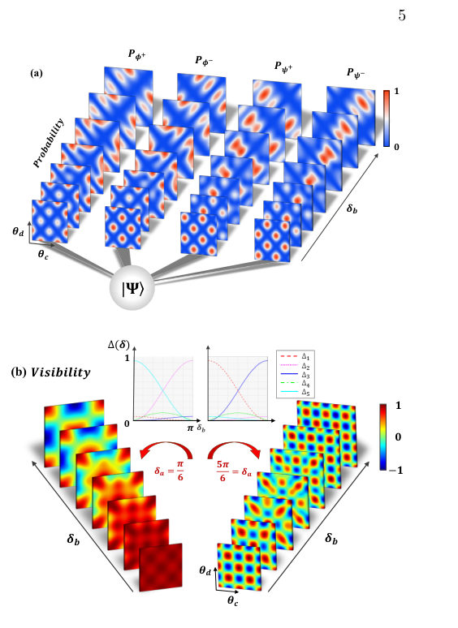
<figcaption class="paper-figure-caption"><b>Fig 3.</b> FIG. 3. Deterministic control of spatial patterns under various detuning. (a) Normalized spatial probability dis- tributions of the four Bell states as a function of the detuning δb with δa = π/2, qa = 1, and qb = −0.5 and identical polar- ization inputs (HH/VV). The evolution from δb = 0 to π il- lustrates the transition from single-beam dominated patterns to hybrid topological structures. (b) Visibility distributions (ν) for two distinct regimes: δa = π/6 (left) and δa = 5π/6 (right). The vertical progression shows the shift from broad interference fringes to high-frequency or homogeneous distri- butions. Note that qa = 1 and qb = −0.5. The terminal line charts quantify the weights of the...</figcaption>
</figure>
<figure class="paper-figure-card">
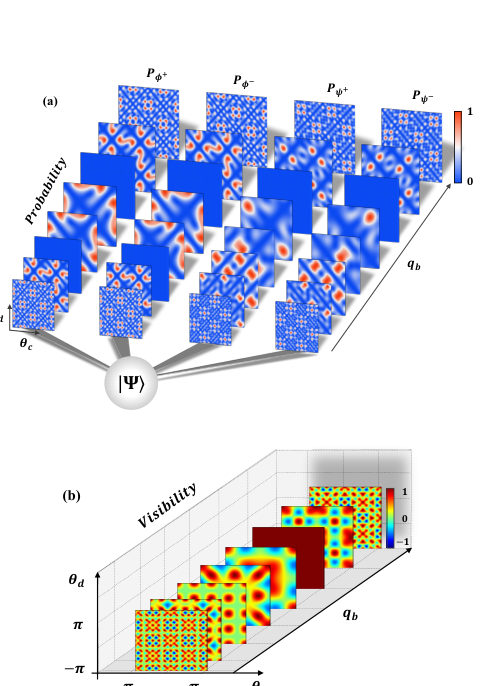
<figcaption class="paper-figure-caption"><b>Fig 4.</b> FIG. 4. Topological scaling and symmetry of spatial correlations. (a) Normalized spatial probability distribu- tions of the four Bell states as a function of path-b q-plate topological charge, qb. The evolution from qb = −5 to qb = 5 illustrates the multiplicative effect of the charge on the spa- tial frequency of interference fringes. The overall impinging pattern is a direct consequence of the patterning dictated by BPX. (b) Interference visibility spatial distributions across varying topological charges. The vertical progression illus- trates the transition from high-frequency, complex lattice-like interference fringes for large negative qb to broad spatial fea- tures at small |qb|, then...</figcaption>
</figure>
<figure class="paper-figure-card">
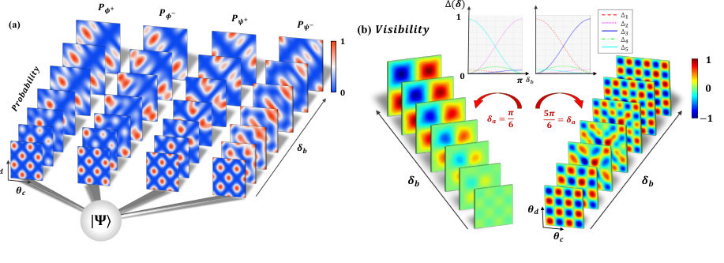
<figcaption class="paper-figure-caption"><b>Fig 5.</b> FIG. 5. Spatial correlations for various topological charges for orthogonal input polarizations. (a) Subplots detailing the spatial probability distributions of the Bell states. The four columns represent the respective distributions for each of the four Bell states. The results have been normalized. (b) Subplots illustrating the visibility distributions. The data in both panels is generated using HV/VH input light and plotted over the (θc, θd) ∈[−π, π] space, keeping qa = 1 and δa = δb = π/2 constant. The vertical progression highlights the effect of varying qb, evaluated at qb ∈{−5, −2, −1, −0.5, 0.5, 1, 2, 5}.</figcaption>
</figure>
</div>

<p><strong>Summary.</strong> The paper introduces topological quantum interferometry using the exchange Berry phase (BPX) to characterize high-dimensional quantum states generated by structured light. It shows that the resulting spatial interference patterns contain topological invariants that can non-tomographically estimate the state's dimensionality. This offers a scalable and robust method for quantum metrology and network applications.</p>
<p><strong>Why it may be interesting.</strong> This work provides a powerful, device-independent tool for characterizing complex quantum states (high-dimensional entanglement) using purely geometric principles derived from interference patterns, which is highly relevant for scalable quantum network characterization.</p>
<details>
<summary>Detailed structure</summary>
<p><strong>Main problem.</strong> The core problem is developing methods to characterize high-dimensional quantum states using topological principles, overcoming limitations of traditional characterization techniques that assume ideal experimental conditions.</p>
<p><strong>Main result.</strong> The exchange Berry phase (BPX) acts as a deterministic control parameter whose associated phase singularities serve as a non-tomographic witness for estimating the state's dimensionality.</p>
<p><strong>Method.</strong> The authors establish a formalism based on topological quantum interferometry, generalizing $q$-plate state generation and characterization to arbitrary detuning conditions. They calculate Bell state probabilities and visibility using geometric phases derived from the BPX.</p>
<p><strong>Model / system.</strong> The system involves structured light interacting via two-photon interference at a beamsplitter, utilizing q-plates whose action is described by unitary transformations involving topological charges ($q$) and detunings ($\delta$).</p>
<p><strong>Key observables.</strong> Bell state probabilities ($\mathcal{P}_{\Phi^\pm}, \mathcal{P}_{\Psi^\pm}$), interference visibility ($
u$), and the net topological winding number ($W$).</p>
<p><strong>Important parameters / regimes.</strong> Topological charges ($q_a, q_b$), detunings ($\delta_a, \delta_b$), and spatial coordinates ($  heta_c,     heta_d$).</p>
<p><strong>Assumptions / limitations.</strong> The analysis relies on decomposing the state into fundamental modes governed by geometry, and some calculations simplify the radial dependence of the field components.</p>
<p><strong>Figures summary.</strong> Figures illustrate the conceptual framework of interference patterns dictated by BPX, show phase evolution across Bell basis states under varying detuning/charge, and map out spatial probability distributions for different input polarizations.</p>
<p><strong>Paper structure.</strong> The paper builds from establishing the physical model (q-plates and structured light) to deriving the mathematical formalism using geometric phases ($ ext{BPX}$). It then applies this framework to calculate observable quantities like Bell state probabilities and visibility, culminating in demonstrating how topological invariants provide a dimensionality witness.</p>
</details>
<details>
<summary>Abstract</summary>
<p>Structured light provides high-dimensional Hilbert spaces holding tremendous potential for fundamental quantum optics and quantum technologies. However, existing characterization methods, like Hong-Ou-Mandel (HOM) interference, typically assume perfectly tuned conditions, overlooking the geometric physics governing spatial mode evolution. Here, we establish topological quantum interferometry driven by an interaction-based geometric phase, the exchange Berry phase (BPX). Our formalism generalizes $q$-plate state generation and characterization to arbitrary topological charges and (de)tuning conditions, demonstrating that BPX acts as a geometric marker governing spatial interference. We show BPX serves as a deterministic control parameter, decomposing two-photon spatial patterns into geometry-dictated fundamental modes. This mapping reveals topological invariants and phase singularities that function as a non-tomographic witness for state dimensionality estimation, circumventing full-state reconstruction. Being device-independent and highly scalable, this approach enables scalable high-dimensional characterization and topologically protected state selection, with direct applicability to quantum metrology and high-capacity quantum networks.</p>
</details>
<p><sub><a href="#top">↑ back to top</a></sub></p>

<p><a id="paper-2606.20260"></a></p>
<h3 id="effects-of-nonlocal-interactions-on-s-and-d-wave-superconducting-correlations-in-the-extended-hubbard-model"><a href="http://arxiv.org/abs/2606.20260v1">Effects of nonlocal interactions on s- and d-wave superconducting correlations in the extended Hubbard model</a></h3>
<p><strong>Authors:</strong> Pavol Farkasovsky<br>
<strong>Type:</strong> theory · <strong>Category:</strong> strongly correlated electrons · <strong>PDF:</strong> <a href="https://arxiv.org/pdf/2606.20260v1">https://arxiv.org/pdf/2606.20260v1</a><br>
<strong>Analysis basis:</strong> full PDF text, analyzed in chunks
<strong>Topic relevance:</strong> <code>analog quantum simulation</code> <strong>3/5</strong></p>
<div class="figure-strip-hint">↔ Scroll figures horizontally</div>
<div class="paper-figures-scroll">
<figure class="paper-figure-card">
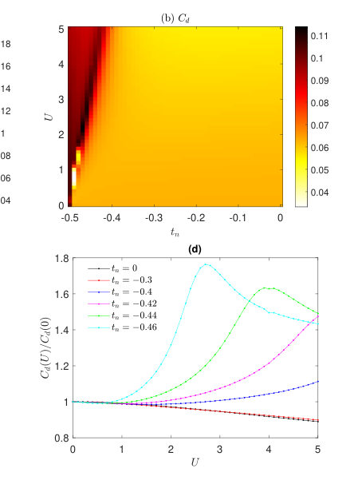
<figcaption class="paper-figure-caption"><b>Fig 1.</b> Figure 1: Correlation functions Cs (a) and Cd (b) with s- and d-wave symmetry as functions of U and tn calculated for the L = 4×4 cluster and N↑= N↓= 5. The ratio Cs(U)/Cs(U = 0) (c) and Cd(U)/Cd(U = 0) (d) as a function of U calculated for different values of tn.</figcaption>
</figure>
<figure class="paper-figure-card">
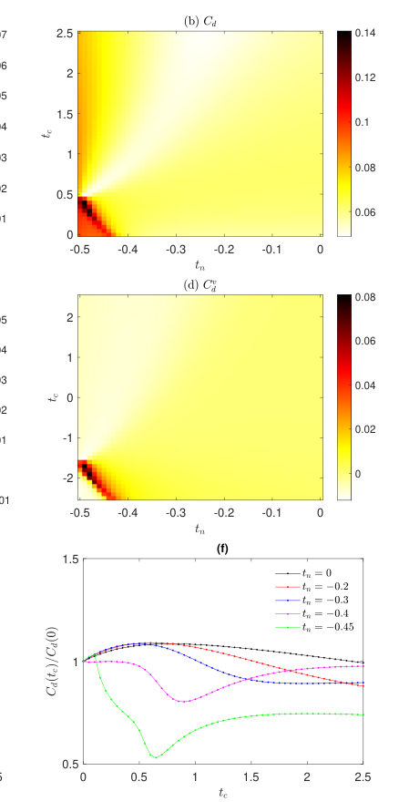
<figcaption class="paper-figure-caption"><b>Fig 2.</b> Figure 2: Correlation functions Cs (a) and Cd (b) with s- and d-wave symmetry as functions of tc and tn calculated for U = 4, N↑= N↓= 5 on the L = 4 × 4 cluster. The vertex correlation functions Cv s (c) and Cv d (d) as functions of tc and tn. The ratio Cs(tc)/Cs(tc = 0) (e) and Cd(tc)/Cd(tc = 0) (f) as a function of tc calculated for different values of tn.</figcaption>
</figure>
<figure class="paper-figure-card">
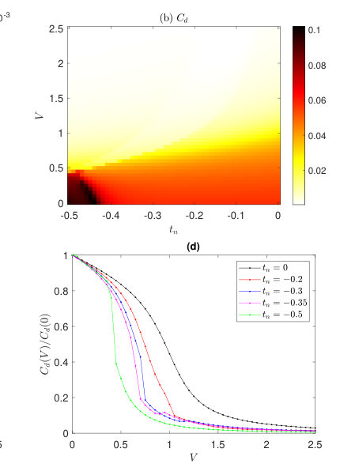
<figcaption class="paper-figure-caption"><b>Fig 3.</b> Figure 3: Correlation functions Cs (a) and Cd (b) with s- and d-wave symmetry as functions of V and tn calculated for U = 4, N↑= N↓= 5 on the L = 4 × 4 cluster. The ratio Cs(V )/Cs(V = 0) (c) and Cd(V )/Cd(V = 0) (d) as a function of V calculated for different values of tn.</figcaption>
</figure>
<figure class="paper-figure-card">
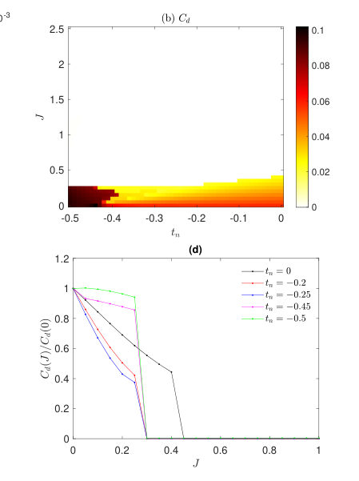
<figcaption class="paper-figure-caption"><b>Fig 4.</b> Figure 4: Correlation functions Cs (a) and Cd (b) with s- and d-wave symmetry as functions of J and tn calculated for U = 4, N↑= N↓= 5 on the L = 4 × 4 cluster. The ratio Cs(J)/Cs(J = 0) (c) and Cd(J)/Cd(J = 0) (d) as a function of J calculated for different values of tn.</figcaption>
</figure>
<figure class="paper-figure-card">
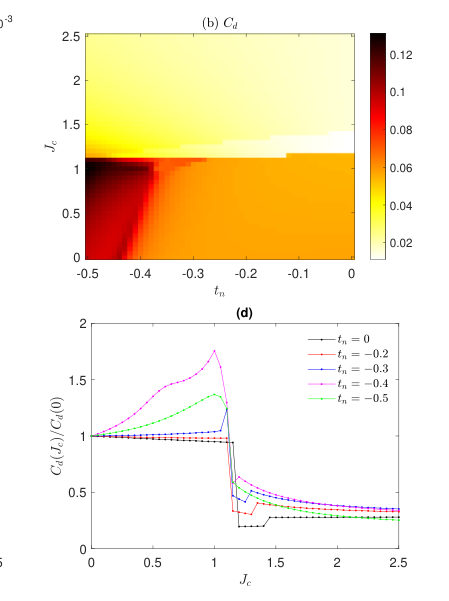
<figcaption class="paper-figure-caption"><b>Fig 5.</b> Figure 5: Correlation functions Cs (a) and Cd (b) with s- and d-wave symmetry as functions of Jc and tn calculated for U = 4, N↑= N↓= 5 on the L = 4 × 4 cluster. The ratio Cs(Jc)/Cs(Jc = 0) (c) and Cd(Jc)/Cd(Jc = 0) (d) as a function of Jc calculated for different values of tn.</figcaption>
</figure>
</div>

<p><strong>Summary.</strong> This paper theoretically explores unconventional superconductivity in the extended Hubbard model by incorporating multiple nonlocal interactions. Using exact diagonalization and PQMC, the authors demonstrate that these interactions dictate a complex interplay between s-wave and d-wave pairing symmetries. The findings emphasize that realistic descriptions of strongly correlated materials require going significantly beyond the minimal Hubbard Hamiltonian.</p>
<p><strong>Why it may be interesting.</strong> This work provides detailed theoretical insight into how extending the Hubbard model with realistic nonlocal terms can fundamentally alter the predicted superconducting pairing symmetry and strength, which is crucial for understanding high-Tc superconductors.</p>
<details>
<summary>Detailed structure</summary>
<p><strong>Main problem.</strong> The study investigates how various nonlocal interactions influence superconducting correlations (s-wave and d-wave) within the extended Hubbard model.</p>
<p><strong>Main result.</strong> Nonlocal interactions have a highly nontrivial, symmetry-dependent effect: $t_n$ enhances d-wave pairing with on-site repulsion, while correlated hopping ($t_c$) strongly promotes s-wave correlations.</p>
<p><strong>Method.</strong> The research employs Lanczos exact diagonalization on small clusters and supplements results using Projector Quantum Monte Carlo simulations to analyze pair correlation functions.</p>
<p><strong>Model / system.</strong> The system is modeled by the extended Hubbard model, incorporating terms for nearest/next-nearest neighbor hopping ($t, t_n$), on-site repulsion ($U$), and several nonlocal interactions like nearest-neighbor Coulomb interaction ($V$), correlated hopping ($t_c$), exchange ($J$), and pair hopping ($J_c$).</p>
<p><strong>Key observables.</strong> Equal-time pair–pair correlation functions for s-wave ($C_s$) and d-wave ($C_d$) symmetries, as well as vertex correlation functions.</p>
<p><strong>Important parameters / regimes.</strong> Interaction strengths $U, V, t_c, J, J_c$, hopping amplitudes $t, t_n$. The analysis explores regimes where these terms are varied relative to each other.</p>
<p><strong>Assumptions / limitations.</strong> The primary limitations include the small system size accessible via exact diagonalization ($4	imes 4$ cluster), though PQMC helps extend the regime of study. It assumes that a comprehensive treatment beyond the minimal Hubbard model is necessary for realism.</p>
<p><strong>Figures summary.</strong> Figures illustrate the dependence of $C_s$ and $C_d$ on various parameters (e.g., $U, t_n, J_c$), showing non-monotonic behavior, enhancement, or suppression based on the specific interaction term being varied.</p>
<p><strong>Paper structure.</strong> The paper systematically analyzes the effect of each nonlocal interaction term ($V, t_c, J, J_c$) individually on pairing correlations. It culminates by examining the combined effects of all interactions to map out a complex phase diagram showing competition between symmetries.</p>
</details>
<details>
<summary>Abstract</summary>
<p>We investigate the influence of nonlocal interactions on superconducting correlations within the extended Hubbard model. In addition to the on-site Coulomb interaction and nearest-neighbor hopping, we include next-nearest-neighbor hopping together with several physically relevant nonlocal terms, namely nearest-neighbor Coulomb interaction, correlated hopping, exchange interaction, and pair hopping. Using Lanczos exact diagonalization on a $4\times4$ cluster, supported by projector quantum Monte Carlo simulations for selected parameter regimes, we analyze pairing correlations in both the s- and d-wave channels. We demonstrate that nonlocal interactions exert a highly nontrivial and symmetry-dependent influence on superconducting correlations. While the on-site repulsion in cooperation with next-nearest-neighbor hopping enhances d-wave pairing tendencies, correlated hopping and nearest-neighbor Coulomb interaction strongly promote s-wave correlations, whereas exchange and pair-hopping interactions can efficiently suppress superconductivity beyond relatively small critical strengths. When all nonlocal interactions are considered simultaneously, the resulting phase diagrams reveal a complex interplay and competition between different pairing symmetries. Our results highlight the crucial role of extended interactions in shaping the pairing landscape of strongly correlated systems and demonstrate that a comprehensive treatment beyond the minimal Hubbard model is essential for a realistic description of unconventional superconductivity.</p>
</details>
<p><sub><a href="#top">↑ back to top</a></sub></p>

<p><a id="paper-2606.19470"></a></p>
<h3 id="local-controllability-of-heralded-quantum-linear-optics"><a href="http://arxiv.org/abs/2606.19470v1">Local controllability of heralded quantum linear optics</a></h3>
<p><strong>Authors:</strong> Tommaso Francalanci, Nicolò Spagnolo, Mario Sigalotti, Eliott Z. Mamon, Ulysse Chabaud, Fabio Sciarrino<br>
<strong>Type:</strong> theory · <strong>Category:</strong> quantum information and computing · <strong>PDF:</strong> <a href="https://arxiv.org/pdf/2606.19470v1">https://arxiv.org/pdf/2606.19470v1</a><br>
<strong>Analysis basis:</strong> full PDF text, analyzed in chunks
<strong>Topic relevance:</strong> <code>measurement-induced transitions</code> <strong>2/5</strong> · <code>quantum measurements</code> <strong>2/5</strong> · <code>Keldysh / 2PI / non-Gaussian methods</code> <strong>1/5</strong> · <code>analog quantum simulation</code> <strong>1/5</strong> · <code>entanglement &amp; information structure</code> <strong>1/5</strong> · <code>interference shaping light</code> <strong>1/5</strong> · <code>methods for driven-dissipative</code> <strong>1/5</strong> · <code>non-equilibrium dynamics</code> <strong>1/5</strong></p>
<div class="figure-strip-hint">↔ Scroll figures horizontally</div>
<div class="paper-figures-scroll">
<figure class="paper-figure-card">
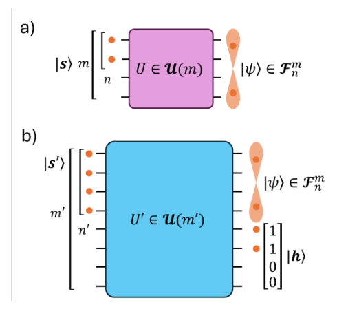
<figcaption class="paper-figure-caption"><b>Fig 1.</b> Figure 1. Schematics of different settings: (a) Passive linear optics, with n photons in m modes evolving through a circuit described by U ∈U(m) (b) Heralded linear optics, where an enlarged input state comprising n′ photons in m′ modes is considered, evolving through a circuit described by U ′ ∈U(m′), followed by projection onto a fixed heralding state |h⟩for heralding.</figcaption>
</figure>
<figure class="paper-figure-card">
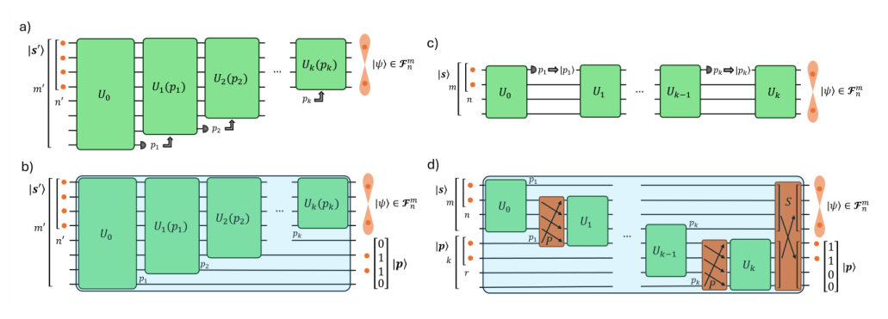
<figcaption class="paper-figure-caption"><b>Fig 2.</b> Figure 2. Schematics of different settings: (a) Adaptive linear optics (ALO), where the evolution consists of a sequence of unitary layers U1(p1), U2(p2), . . . , Uk(pk) conditioned on intermediate measurement outcomes. (b) Equivalent heralded linear optics (HLO) description of a single adaptive branch, obtained by combining all conditional unitaries into a single global unitary U ′ ∈U(m′) followed by projection onto a fixed heralding outcome. (c) Single-mode State Injection (SI) protocol, where photon-counting measurements are interleaved with unitaries and followed by reinjection of the measured photons. (d) Equivalent HLO representation of the single-branch SI scheme, obtained by...</figcaption>
</figure>
<figure class="paper-figure-card">
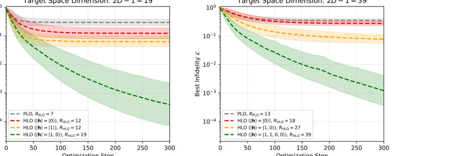
<figcaption class="paper-figure-caption"><b>Fig 3.</b> Figure 3. Evolution of the best infidelity L as a function of the optimization steps for output space with either n = 3 photons in m = 3 modes (target space dimension 2D −1 = 19) or n = 3 photons in m = 4 modes (target space dimension 2D −1 = 39). The curves represent the geometric mean over M = 200 Haar-random target states, with shaded areas indicating the geometric standard deviation. The gray dashed line corresponds to standard Passive Linear Optics (PLO), which quickly plateaus due to insufficient degrees of freedom. HLO configurations with suboptimal ancillary resources show improved performance but still exhibit a saturation of the loss. In contrast, the HLO configuration with...</figcaption>
</figure>
<figure class="paper-figure-card">
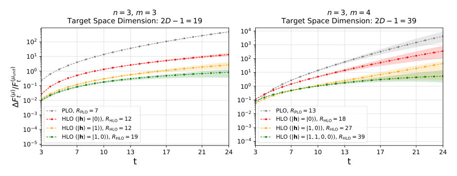
<figcaption class="paper-figure-caption"><b>Fig 4.</b> Figure 4. Relative difference between the frame potentials of output states |ψ(U ′, s′, h)⟩of PLO/HLO circuits, and the ones of the uniform measure on all pure states. The configurations considered are exactly the same as those in Figure 3. For each configuration, Nsamples = 3000 Haar random matrices U ′ ∈U(m′) were drawn, and the normalized output states |ψ⟩= |ψ(U ′, s′, h)⟩computed. Estimates of the t-th frame potential F (µ) t (solid circles) are then calculated as the empirical average of |⟨ψ1|ψ2⟩|2t over all distinct pairs (|ψ1⟩, |ψ2⟩) of states obtained. The relative differences with the uniform measure’s frame potential are then computed using Eq. (G2). Lastly, this whole process is...</figcaption>
</figure>
</div>

<p><strong>Summary.</strong> The paper develops a rigorous theoretical framework to measure how well heralded quantum linear optical circuits can generate target quantum states. By analyzing the Jacobian rank and ensemble properties (frame potentials), it quantifies the added expressivity gained by incorporating conditional measurements over simple passive optics. This provides crucial, systematic criteria for designing high-dimensional photonic quantum state engineering protocols.</p>
<p><strong>Why it may be interesting.</strong> This work provides powerful mathematical tools—Jacobian rank and frame potentials—to quantitatively assess the fundamental limits of quantum state preparation using linear optics, which is a cornerstone platform in photonic quantum computing.</p>
<details>
<summary>Detailed structure</summary>
<p><strong>Main problem.</strong> The work investigates the local controllability of photonic states generated by linear optical networks, specifically comparing passive vs. heralded schemes.</p>
<p><strong>Main result.</strong> The authors establish systematic criteria using Jacobian rank analysis to quantify how ancillary resources in heralded optics enlarge the accessible state space beyond what is possible with passive optics.</p>
<p><strong>Method.</strong> The primary method involves analyzing the rank of the Jacobian matrix of the output state with respect to the underlying unitary circuit, which measures the dimension of the accessible tangent space.</p>
<p><strong>Model / system.</strong> The system under study is photonic linear optical networks, encompassing both purely passive evolution and heralded schemes involving conditional measurements on auxiliary modes. The analysis uses concepts from Lie algebra and geometric measure theory applied to quantum state manifolds.</p>
<p><strong>Key observables.</strong> Jacobian rank ($R_{HLO}$), Frame Potentials ($F(\mu)_t$), Infidelity ($L(U')$).</p>
<p><strong>Important parameters / regimes.</strong> Number of modes ($m, m'$), number of photons ($n, n'$), and the nature/availability of ancillary resources (heralding patterns $|h
angle$).</p>
<p><strong>Assumptions / limitations.</strong> The analysis often assumes generic conditions for unitary matrices or relies on topological arguments that suggest global reachability if local rank is maximal.</p>
<p><strong>Figures summary.</strong> Figures illustrate schematics comparing passive and heralded linear optics setups, and numerical results show the relative difference in frame potentials between PLO and HLO settings.</p>
<p><strong>Paper structure.</strong> The paper progresses from defining the limitations of passive optics to developing a rigorous Jacobian rank analysis for heralded schemes. It establishes upper bounds via symmetry arguments, derives lower bounds through specific configurations, and finally uses ensemble methods (frame potentials) to test global expressivity.</p>
</details>
<details>
<summary>Abstract</summary>
<p>Photonic linear optical networks provide a versatile platform for quantum information processing and quantum state engineering. However, the set of states that can be generated using passive linear optics alone is fundamentally constrained by bosonic symmetries. Heralding, based on conditional measurements on auxiliary modes, is a widely used technique to overcome these limitations and effectively enlarge the set of accessible states. Despite the widespread use of heralding, it is often unclear how specific ancillary resources impact the overall reachability of the target space. In this work, we investigate the local controllability of photonic states in linear optical networks by analyzing the rank of the Jacobian of the output state with respect to the underlying unitary circuit, which provides a quantitative measure of the dimension of the accessible tangent space at a given configuration. Our analysis ranges from passive linear optics to heralded linear optics, where auxiliary resources and conditional measurements are included. Within this framework, we quantify how different resources enlarge the locally accessible state space beyond that of passive linear optics and determine the resources required for the Jacobian rank to reach its maximal value, thereby achieving full local controllability. As maximal local rank is a necessary condition for global reachability, our framework offers a systematic tool to assess and compare the accessible state space of measurement-based photonic architectures, and to establish practical criteria for the resources needed in high-dimensional quantum state engineering.</p>
</details>
<p><sub><a href="#top">↑ back to top</a></sub></p>

<p><a id="paper-2606.20157"></a></p>
<h3 id="direct-observation-of-channelised-supercurrents-in-a-kagome-superconductor"><a href="http://arxiv.org/abs/2606.20157v1">Direct Observation of Channelised Supercurrents in a Kagome Superconductor</a></h3>
<p><strong>Authors:</strong> Matthijs Rog, Tycho J. Blom, Reinier Q. Regter, Andrea Capa Salinas, Dalal Benali, Jinwon Lee, Daan B. Boltje, Mark H. Fischer, Titus Neupert, Stephen D. Wilson, Milan P. Allan, Kaveh Lahabi<br>
<strong>Type:</strong> experiment · <strong>Category:</strong> strongly correlated electrons · <strong>PDF:</strong> <a href="https://arxiv.org/pdf/2606.20157v1">https://arxiv.org/pdf/2606.20157v1</a><br>
<strong>Analysis basis:</strong> full PDF text, analyzed in chunks
<strong>Topic relevance:</strong> <code>driven-dissipative phase transition</code> <strong>2/5</strong> · <code>non-equilibrium dynamics</code> <strong>2/5</strong> · <code>Frenkel-Kontorova</code> <strong>1/5</strong> · <code>analog quantum simulation</code> <strong>1/5</strong> · <code>correlated / nonlocal dissipation</code> <strong>1/5</strong> · <code>interference shaping light</code> <strong>1/5</strong> · <code>non-equilibrium universality</code> <strong>1/5</strong></p>
<div class="figure-strip-hint">↔ Scroll figures horizontally</div>
<div class="paper-figures-scroll">
<figure class="paper-figure-card">
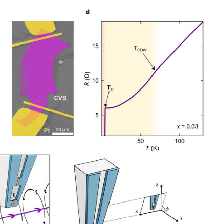
<figcaption class="paper-figure-caption"><b>Fig 1.</b> Fig. 1 | Flakes of CsV3Sb5-xSnx. a, Crystal structure of CsV3Sb5-xSnx. b, Atomic-resolution STM topograph on the Sb-termination of the x = 0.03 parent crystal, showing the distribution of Sn dopants. The right images show the underlying Sb lattice and the 1x4 CDW structure inside the magenta rectangle, obtained through Fourier-space filtering. c, False coloured scanning electron image of the device D1 (x = 0.03), contacted with Pt leads. d, Resistance-temperature measurement on device D1, emphasizing the transition to a CDW and then a superconducting state. e,f, Supercurrent interference patterns on device D1, showing that there are intrinsic oscillations over a wide range of periods. The...</figcaption>
</figure>
<figure class="paper-figure-card">
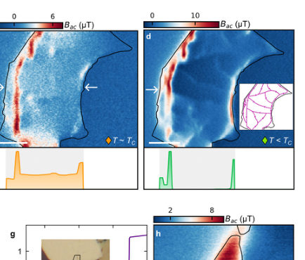
<figcaption class="paper-figure-caption"><b>Fig 2.</b> Fig. 2 | Channelised supercurrents in CsV3Sb5-xSnx. a, Resistance-temperature characteristic of device D1 through its superconducting transition. Before it hits the zero resistance state, it discontinuously passes through various features. b-d, TM-SOT images of the magnetic field Bac generated by an AC current Iac = 85 μA applied to the flake, for the three temperatures marked in a. Channelised supercurrent paths emerge on the transition and, at the lowest temperature, span the entire flake. Below the images, current patterns along a line cut, marked by the arrows, are shown. The current patterns are normalized to their peak value. The inset of d shows the current paths identified from the...</figcaption>
</figure>
<figure class="paper-figure-card">
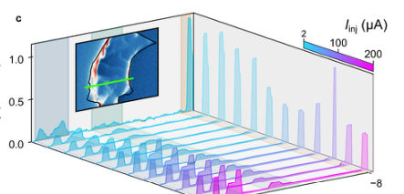
<figcaption class="paper-figure-caption"><b>Fig 3.</b> Fig. 3 | Evolution of the channelised current distribution in device D1. a, Current distribution at different temperatures through the transition along the line marked in green. All curves are normalized to their area. The channels appear immediately at the transition, are stable in temperature, and have a width smaller than the Pearl length Λ. b, Transport characteristics of device D1 at 1.7 K. The flake hosts a cascade of critical currents, marked by the black arrows. c, Evolution of the current distribution along the line marked in green, as the injected current is increased from 2 μA (I &lt; Ic1) to 200 μA (I &gt; Ic9). While currents redistribute and a small interior current appears, the...</figcaption>
</figure>
</div>

<p><strong>Summary.</strong> This work uses SQUID microscopy and STM on Kagome superconductors ($   ext{CsV}<em 5-x>3  ext{Sb}</em>_x$) to map supercurrent flow. The key finding is that supercurrents are confined to narrow, stable channels, suggesting the superconducting state is governed by an intrinsic Josephson junction network competing with charge density wave order. This provides new local insight into strongly correlated electron behavior.}   ext{Sn</p>
<p><strong>Why it may be interesting.</strong> The strong spatial localization of supercurrents and the evidence for competing orders (CDW) provide a concrete experimental platform for studying complex many-body interactions beyond simple BCS theory, which is highly relevant to correlated electron physics.</p>
<details>
<summary>Detailed structure</summary>
<p><strong>Main problem.</strong> The study aims to understand the anomalous transport properties of Kagome superconductors, particularly how supercurrents are spatially distributed and influenced by competing orders like Charge Density Waves (CDW).</p>
<p><strong>Main result.</strong> Supercurrent flow is found to be highly confined to narrow, stable channels that emerge below the critical temperature, suggesting an intrinsic Josephson junction network rather than simple edge effects.</p>
<p><strong>Method.</strong> The research employs advanced nanoscale characterization techniques including Superconducting Quantum Interference Device (SQUID) microscopy and Scanning Tunneling Microscopy (STM).</p>
<p><strong>Model / system.</strong> The physical system is the $    ext{AV}<em 5-x>3   ext{Sb}_5$ ($   ext{A} =    ext{Cs},    ext{K},     ext{Rb}$) family of Kagome superconductors, specifically doped flakes like $    ext{CsV}_3  ext{Sb}</em>_x$. The analysis compares observed transport to models involving Josephson junctions and competing CDW order.}   ext{Sn</p>
<p><strong>Key observables.</strong> Supercurrent interference patterns, spatially confined current channels, superconducting energy gap ($\Delta^*$), and non-linear current-voltage characteristics.</p>
<p><strong>Important parameters / regimes.</strong> Doping strength ($x$), temperature (especially near $T_c$), and applied bias/injected current ($I_{	ext{inj}}$).</p>
<p><strong>Assumptions / limitations.</strong> The observed supercurrent anomalies are attributed to Josephson coupling within a network of narrow filaments, ruling out simple depairing mechanisms.</p>
<p><strong>Figures summary.</strong> Figures illustrate the confinement of supercurrents and Meissner screening to narrow channels using SQUID microscopy across temperature changes, alongside STM spectra confirming the superconducting gap structure.</p>
<p><strong>Paper structure.</strong> The paper progresses by first identifying anomalous transport features in Kagome superconductors, then using SQUID/STM imaging to map current flow spatially, arguing that this confinement points toward an intrinsic Josephson junction network linked to charge order physics.</p>
</details>
<details>
<summary>Abstract</summary>
<p>Superconductors are many-body quantum states in which current flows without dissipation. Theory predicts that supercurrents follow a relatively simple spatial pattern in both conventional and unconventional superconductors. Recent studies into the AV3Sb5 (A = Cs, K, Rb) family of Kagome superconductors indicate that CsV3Sb5 has unconventional transport properties that cannot be accounted for with these simple theories, including reports of intrinsic Josephson junctions, higher order Cooper pairing and the zero field diode effect. Attempts to interpret these findings have focused on the interplay of superconductivity with the unconventional charge density wave (CDW) order in these materials, with which superconductivity competes. A current roadblock to understanding how these kagome superconductors give rise to their intriguing properties is the lack of spatially resolved information about transport. Here we show, using a recently developed superconducting quantum interference device (SQUID) microscope, that flakes of CsV3Sb5-xSnx host a network of narrow supercurrent channels. These supercurrent channels emerge at the critical temperature and remain stable for all temperatures and currents. Their non-linear behaviour is consistent with a network of Josephson junctions linked by narrow supercurrent filaments, which naturally leads to the observed transport anomalies. Intriguingly, these observations are much weaker in undoped samples, which suggests links to the physics of charge density waves, disorder, and electronic correlations, all of which are greatly influenced by the doping strength. These results establish new frontiers for the local investigation of charge transport and competing orders in strongly correlated electron systems, and shine a new light on the anomalous transport properties of the AV3Sb5 kagome superconductors.</p>
</details>
<p><sub><a href="#top">↑ back to top</a></sub></p>

<p><a id="paper-2606.19732"></a></p>
<h3 id="quantum-models-with-the-yang-lee-phase-transition"><a href="http://arxiv.org/abs/2606.19732v1">Quantum models with the Yang-Lee phase transition</a></h3>
<p><strong>Authors:</strong> Erick Arguello Cruz, Grigory Tarnopolsky<br>
<strong>Type:</strong> theory · <strong>Category:</strong> statistical mechanics · <strong>PDF:</strong> <a href="https://arxiv.org/pdf/2606.19732v1">https://arxiv.org/pdf/2606.19732v1</a><br>
<strong>Analysis basis:</strong> full PDF text, analyzed in chunks
<strong>Topic relevance:</strong> <code>driven-dissipative phase transition</code> <strong>2/5</strong> · <code>non-equilibrium universality</code> <strong>2/5</strong> · <code>Frenkel-Kontorova</code> <strong>1/5</strong> · <code>Keldysh / 2PI / non-Gaussian methods</code> <strong>1/5</strong> · <code>analog quantum simulation</code> <strong>1/5</strong> · <code>non-equilibrium dynamics</code> <strong>1/5</strong></p>
<div class="figure-strip-hint">↔ Scroll figures horizontally</div>
<div class="paper-figures-scroll">
<figure class="paper-figure-card">
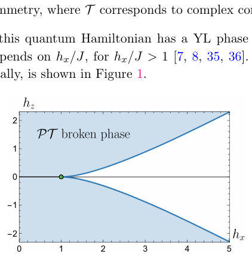
<figcaption class="paper-figure-caption"><b>Fig 1.</b> Figure 1: Phase diagram of the Yang-Lee quantum model in (3.4). The green dot marks the Ising critical point at hx,c = 1. The blue lines correspond to the YL critical points, and the shaded region is the PT broken phase, for different values of hx and hz, with J = 1.</figcaption>
</figure>
<figure class="paper-figure-card">
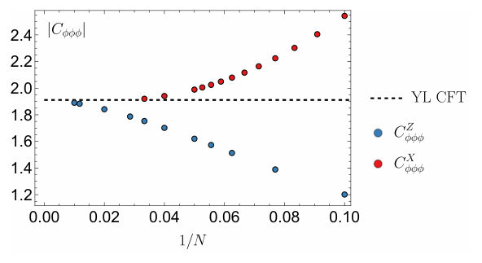
<figcaption class="paper-figure-caption"><b>Fig 2.</b> Figure 2: Structure constant as a function of system size obtained from (4.6), evaluated at J = 1, hx = 1.25 and hz = hz,c. The dashed line represents the theoretical value (4.2).</figcaption>
</figure>
<figure class="paper-figure-card">
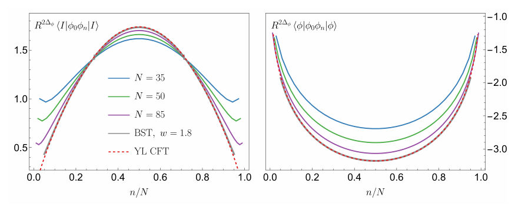
<figcaption class="paper-figure-caption"><b>Fig 3.</b> Figure 3: Two-point functions of ϕ in the identity state |I⟩and the ground state |ϕ⟩as functions of n/N for J = 1, hx = 1.25, and hz = hz,c. In gray, we show the thermodynamic extrapolation obtained using the BST algorithm with w = 1.8 and with dashed red lines, we plot the CFT expressions (4.7) and (4.8), respectively.</figcaption>
</figure>
<figure class="paper-figure-card">
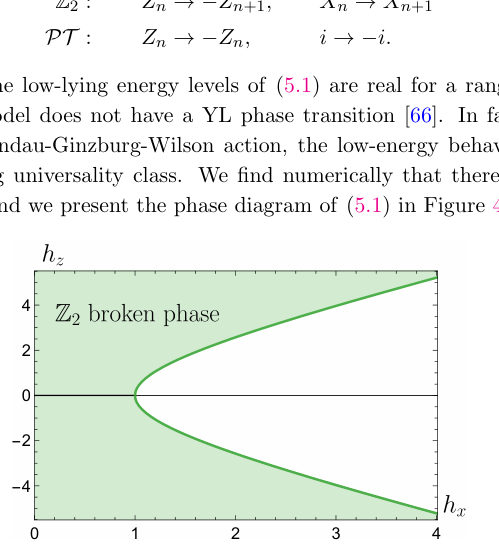
<figcaption class="paper-figure-caption"><b>Fig 4.</b> Figure 4: Phase diagram of the Hamiltonian (5.1) for J = 1. The green line represents the Ising critical points, and the shaded region represents the Z2 broken phase.</figcaption>
</figure>
<figure class="paper-figure-card">
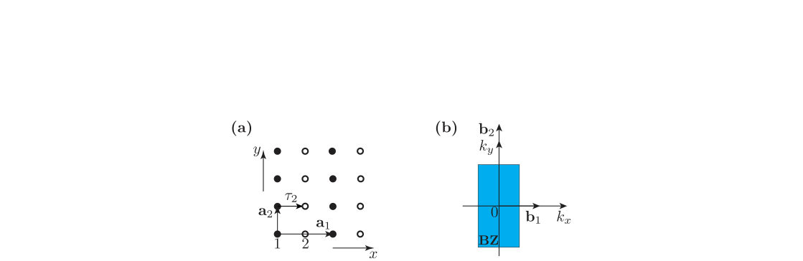
<figcaption class="paper-figure-caption"><b>Fig 5.</b> Figure 5: (a) Layered square lattice with the primitive lattice vectors a1 = 2aˆx and a2 = aˆy and two sites per unit cell, with basis position vectors τ1 = 0 and τ2 = aˆx. Sublattice 1 is depicted by black circles and sublattice 2 is depicted by white circles. (b) The lattice Brillouin zone (BZ). The reciprocal lattice vectors are b1 = π</figcaption>
</figure>
</div>

<p><strong>Summary.</strong> This paper analyzes four distinct 1+1D quantum models—including Ising, Schwinger, Blume-Capel, and clock models—to study the Yang-Lee phase transition. Using advanced field-theoretic methods, the authors demonstrate that these diverse physical systems all map onto a universal critical theory described by an i\phi^3 massless bosonic field. This confirms deep connections between symmetry protection, quantum criticality, and conformal field theory.</p>
<p><strong>Why it may be interesting.</strong> The rigorous connection drawn between diverse physical lattice models (Ising, clock) and a single universal critical theory ($i\phi^3$ CFT) provides powerful insights into how symmetry constraints dictate quantum criticality in condensed matter systems.</p>
<details>
<summary>Detailed structure</summary>
<p><strong>Main problem.</strong> The research investigates quantum models that exhibit the Yang-Lee (YL) phase transition under deformations that preserve PT symmetry.</p>
<p><strong>Main result.</strong> In all four studied quantum models, the YL criticality is consistently described by a massless Euclidean i\phi^3 field theory in the continuum limit.</p>
<p><strong>Method.</strong> The authors employ advanced theoretical techniques including state-operator correspondence, bosonization, and the Polyakov-Hubbard transformation to map microscopic Hamiltonians onto effective bosonic field theories.</p>
<p><strong>Model / system.</strong> Four specific 1+1D quantum models are analyzed: the antiferromagnetic Ising spin chain (with transverse/longitudinal fields), the massive Schwinger model, the Blume-Capel model, and the three-state quantum clock model. These systems are deformed to induce YL criticality.</p>
<p><strong>Key observables.</strong> Scaling dimensions ($\Delta$), effective central charge ($c_{	ext{eff}}$), two-point correlation functions $\langle \phi(0)\phi(n) 
angle$, and pseudo-critical points ($h^*$).</p>
<p><strong>Important parameters / regimes.</strong> The dimensionality $1+1$D, the imaginary coupling constant (related to the YL singularity), and system size $N$.</p>
<p><strong>Assumptions / limitations.</strong> Approximations include using the state-operator correspondence and assuming that low-energy physics is governed by an effective continuum field theory description.</p>
<p><strong>Figures summary.</strong> Figures illustrate phase diagrams, spectral flow showing crossings between different critical points (Ising vs. YL), and numerical results for correlation functions comparing theoretical power laws to exponential decays.</p>
<p><strong>Paper structure.</strong> The paper systematically analyzes multiple models, deriving effective LGW actions via transformations, calculating scaling dimensions using finite-size scaling on the low-energy spectrum, and confirming the underlying CFT description of the critical point.</p>
</details>
<details>
<summary>Abstract</summary>
<p>In this article, we present four different $1+1$D quantum models that realize the Yang-Lee (YL) phase transition under a deformation that preserves $PT$ symmetry. These are the antiferromagnetic Ising spin chain in transverse and longitudinal magnetic fields, the massive Schwinger model, the Blume-Capel model, and the three-state quantum clock model. Using the state-operator correspondence, we identify the YL critical point, compute the scaling dimensions of the lowest operators in each model, and find perfect agreement with the exact results for the YL criticality in two dimensions. Using bosonization for the Schwinger model and the Polyakov-Hubbard transformation for the other models, we show that in all of these quantum models the YL critical point is described, as expected, by a massless bosonic field with an $i φ^3$ interaction. In the quantum clock model, this critical field interacts with a massive bosonic field, and we identify the massless and massive states in the Hamiltonian spectrum. In addition, we numerically compute the two-point function of $φ$ at the Yang-Lee critical point and show that it grows with distance, in agreement with theoretical expectations.</p>
</details>
<p><sub><a href="#top">↑ back to top</a></sub></p>

<p><a id="paper-2606.19462"></a></p>
<h3 id="quantum-deformations-of-math668math-part-i-fidelity-and-experimental-benchmarking"><a href="http://arxiv.org/abs/2606.19462v1">Quantum deformations of $\mathcal{U}(\mathfrak{sl}(2, \mathbb{R}))$. Part I: Fidelity and experimental benchmarking</a></h3>
<p><strong>Authors:</strong> V. Mariscal, J. J. Relancio, L. Santamaría-Sanz<br>
<strong>Type:</strong> both · <strong>Category:</strong> quantum information and computing · <strong>PDF:</strong> <a href="https://arxiv.org/pdf/2606.19462v1">https://arxiv.org/pdf/2606.19462v1</a><br>
<strong>Analysis basis:</strong> full PDF text, analyzed in chunks
<strong>Topic relevance:</strong> <code>QC/QI experiment</code> <strong>2/5</strong> · <code>entanglement &amp; information structure</code> <strong>2/5</strong> · <code>analog quantum simulation</code> <strong>1/5</strong> · <code>methods for driven-dissipative</code> <strong>1/5</strong> · <code>non-equilibrium dynamics</code> <strong>1/5</strong></p>
<div class="figure-strip-hint">↔ Scroll figures horizontally</div>
<div class="paper-figures-scroll">
<figure class="paper-figure-card">
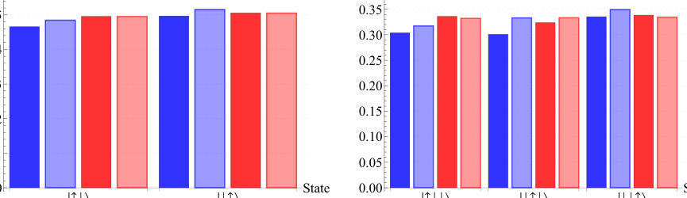
<figcaption class="paper-figure-caption"><b>Fig 1.</b> Figure 1: Comparison of experimental data [39] and theoretical predictions for |D0 2⟩q (left) and</figcaption>
</figure>
<figure class="paper-figure-card">
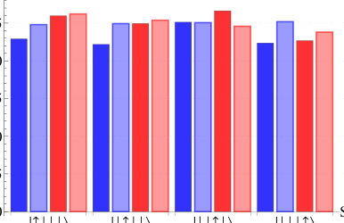
<figcaption class="paper-figure-caption"><b>Fig 2.</b> Figure 2: Comparison of experimental data [39] and theoretical predictions for |D−1 4 ⟩q (left) and |D0 4⟩q (right). Dark blue (dark red) indicates the raw device (error-mitigated) experimental probabilities, while light blue (light red) shows the corresponding theoretical values from the q-deformation.</figcaption>
</figure>
<figure class="paper-figure-card">
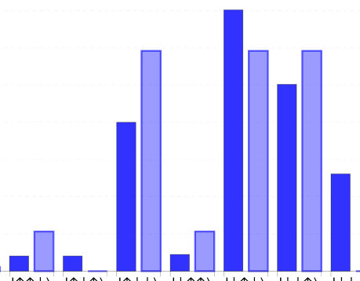
<figcaption class="paper-figure-caption"><b>Fig 3.</b> Figure 3: Comparison of experimental data [57] and theoretical predictions for |D−1 3 ⟩h. Dark blue indicates the raw device experimental probabilities while light blue shows the corresponding theoretical values from the h-deformation.</figcaption>
</figure>
<figure class="paper-figure-card">
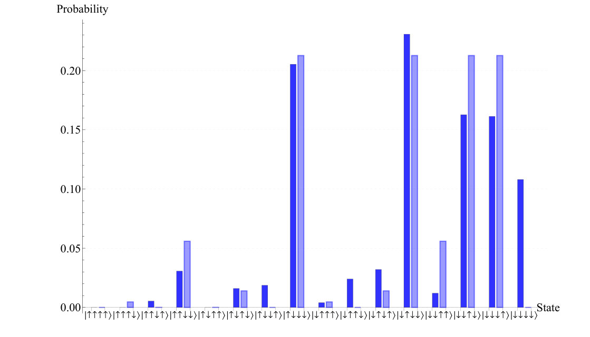
<figcaption class="paper-figure-caption"><b>Fig 4.</b> Figure 4: Comparison of experimental data [57] and theoretical predictions for |D−2 4 ⟩h. Dark blue indicates the raw device experimental probabilities while light blue shows the corresponding theoretical values from the h-deformation.</figcaption>
</figure>
<figure class="paper-figure-card">
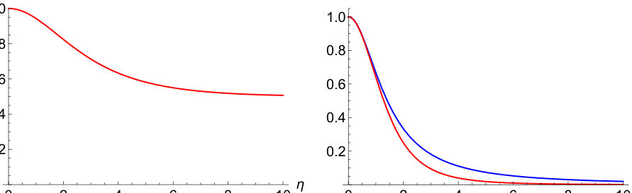
<figcaption class="paper-figure-caption"><b>Fig 5.</b> Figure 5: Left: Fidelity between the q-deformed state |D0 2⟩q (red) (the same for |M 0 2 ⟩q) and its corresponding undeformed state as a function of the deformation parameter. Right: Fidelity between the h-deformed states |M 0 2 ⟩h (blue) and |D−2 2 ⟩h(red) and their corresponding undeformed states as a function of the deformation parameter.</figcaption>
</figure>
</div>

<p><strong>Summary.</strong> This paper investigates how two types of quantum algebraic deformations ($q$ and $h$) modify the states of multi-qubit systems governed by the Kittel–Shore model. By calculating quantum fidelity, the authors show that while $q$-deformation causes a smooth decay in overlap, $h$-deformation leads to rapid state orthogonality. This comparison offers crucial theoretical guidance for interpreting experimental results on highly entangled quantum resources.</p>
<p><strong>Why it may be interesting.</strong> This work provides a rigorous mathematical bridge between abstract quantum group theory ($\mathcal{U}(\mathfrak{sl}(2, \mathbb{R}))$ deformations) and concrete, measurable quantities (quantum state fidelities) relevant for benchmarking current multi-qubit quantum hardware.</p>
<details>
<summary>Detailed structure</summary>
<p><strong>Main problem.</strong> The work explores how standard ($q$-deformation) and non-standard ($h$-deformation) quantum deformations of the $\mathcal{U}(\mathfrak{sl}(2, \mathbb{R}))$ Hopf algebra affect multi-qubit systems.</p>
<p><strong>Main result.</strong> The $q$-deformation smoothly modifies quantum states while maintaining residual overlap with undeformed configurations, whereas the $h$-deformation rapidly drives these states toward orthogonality. Both require specific parameter rescalings to maintain fidelity in the macroscopic limit.</p>
<p><strong>Method.</strong> The authors construct multi-qubit states using Clebsch-Gordan coefficients associated with the deformed algebras and quantify state deviation by computing quantum fidelity ($F$).</p>
<p><strong>Model / system.</strong> The study focuses on multi-qubit systems, analyzing states related to the Kittel–Shore (KS) model Hamiltonian. The algebraic framework involves Hopf algebra deformations of $\mathcal{U}(\mathfrak{sl}(2, \mathbb{R}))$ using parameters $q$ and $h$.</p>
<p><strong>Key observables.</strong> Quantum fidelity ($F$), Dicke states $|D(k)_N
angle$, component probabilities in the computational basis.</p>
<p><strong>Important parameters / regimes.</strong> Deformation parameters $q$ (standard) and $h$ (Jordanian); system size $N$; thermodynamic limit ($N 	o \infty$).</p>
<p><strong>Assumptions / limitations.</strong> The analysis assumes that comparing fidelities provides a valid benchmark for operational errors, and specific scaling limits ($\eta = 	ilde{\eta}/N$) are required to obtain finite results in the thermodynamic limit.</p>
<p><strong>Figures summary.</strong> Figures compare raw experimental data against theoretical predictions for both $q$- and $h$-deformations across 2-qubit and 3-qubit systems, illustrating fidelity decay versus deformation parameters.</p>
<p><strong>Paper structure.</strong> The paper progresses from establishing the algebraic framework (Hopf algebra deformations) to deriving deformed Hamiltonians and states. It then compares theoretical predictions for few-body and macroscopic limits using fidelity calculations, culminating in a discussion of which deformation best models observed quantum correlations.</p>
</details>
<details>
<summary>Abstract</summary>
<p>This work explores the effects of both the standard quantum $q$-deformation and the non-standard $h$-deformation of the Hopf algebra $\mathcal{U}(\mathfrak{sl}(2, \mathbb{R}))$ on multi-qubit systems. By constructing the states of a Hilbert space of $N$ qubits through the Clebsch-Gordan coefficients associated with the deformed algebras, we show that these states naturally coincide with the eigenstates of the Hamiltonian of the $q$- and $h$-deformed Kittel-Shore models. We compare the resulting deformed states with those typically targeted in quantum information experiments, providing a bridge between algebraic constructions and experimentally relevant quantum resources. Fidelities with respect to the undeformed states are computed to establish how the quantum correlations are affected, both for few-qubit systems (including Dicke and non-Dicke states), and in the macroscopic limit ($N \to \infty$) through closed-form formulas derived for arbitrary Dicke states. The results reveal different behaviors between the two deformations. The $q$-deformation smoothly modifies the states and maintains a residual overlap with the original configurations, while the $h$-deformation rapidly makes the states orthogonal to their undeformed counterparts. Both models demand a standard $N^{-1}$ rescaling to preserve fidelity stability in the macroscopic limit.</p>
</details>
<p><sub><a href="#top">↑ back to top</a></sub></p>

<p><a id="paper-2606.20460"></a></p>
<h3 id="scaling-fractal-dynamics-and-critical-exponents-in-the-equilibrium-phase-transition"><a href="http://arxiv.org/abs/2606.20460v1">Scaling, fractal dynamics, and critical exponents in the equilibrium phase transition</a></h3>
<p><strong>Authors:</strong> Adauto F. Souza, Henrique A Lima, Anderson L. R. Barbosa, Fernando A. Oliveira<br>
<strong>Type:</strong> theory · <strong>Category:</strong> statistical mechanics · <strong>PDF:</strong> <a href="https://arxiv.org/pdf/2606.20460v1">https://arxiv.org/pdf/2606.20460v1</a><br>
<strong>Analysis basis:</strong> full PDF text, analyzed in chunks
<strong>Topic relevance:</strong> <code>non-equilibrium universality</code> <strong>2/5</strong> · <code>Keldysh / 2PI / non-Gaussian methods</code> <strong>1/5</strong> · <code>analog quantum simulation</code> <strong>1/5</strong> · <code>correlated / nonlocal dissipation</code> <strong>1/5</strong> · <code>driven-dissipative phase transition</code> <strong>1/5</strong> · <code>non-equilibrium dynamics</code> <strong>1/5</strong></p>
<div class="figure-strip-hint">↔ Scroll figures horizontally</div>
<div class="paper-figures-scroll">
<figure class="paper-figure-card">
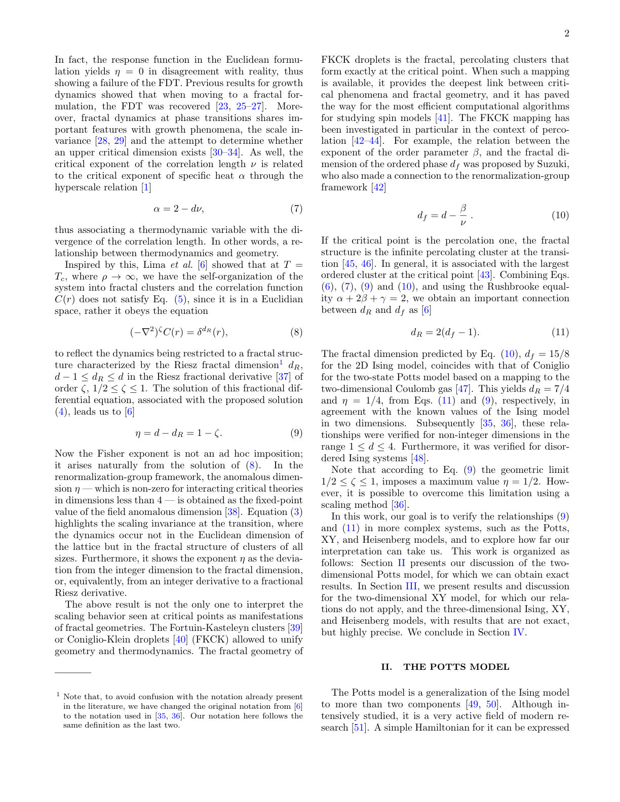
<figcaption class="paper-figure-caption"><b>Fig 1.</b> Low-resolution page preview, page 2</figcaption>
</figure>
<figure class="paper-figure-card">

<figcaption class="paper-figure-caption"><b>Fig 2.</b> Low-resolution page preview, page 3</figcaption>
</figure>
<figure class="paper-figure-card">

<figcaption class="paper-figure-caption"><b>Fig 3.</b> Low-resolution page preview, page 4</figcaption>
</figure>
<figure class="paper-figure-card">

<figcaption class="paper-figure-caption"><b>Fig 4.</b> Low-resolution page preview, page 5</figcaption>
</figure>
<figure class="paper-figure-card">

<figcaption class="paper-figure-caption"><b>Fig 5.</b> Low-resolution page preview, page 6</figcaption>
</figure>
</div>

<p><strong>Summary.</strong> This paper investigates the deep geometric connections between scaling behavior, critical exponents, and fractal dimensions at equilibrium phase transitions. Using fractional calculus applied to correlation functions, the authors establish quantitative relationships between these quantities for models like the Ising and Potts systems. It provides a powerful theoretical framework that unifies several key concepts in critical phenomena theory.</p>
<p><strong>Why it may be interesting.</strong> While focused on classical statistical mechanics, the use of fractal geometry and generalized differential operators provides advanced mathematical tools for characterizing critical phenomena that can inspire analogous treatments in quantum many-body systems near continuous phase transitions.</p>
<details>
<summary>Detailed structure</summary>
<p><strong>Main problem.</strong> To establish a unified geometric interpretation connecting scaling behavior, critical exponents, and fractal geometry in equilibrium phase transitions.</p>
<p><strong>Main result.</strong> The study derives relationships between critical exponents ($\eta$, $
u$) and fractal dimensions ($d_R$, $d_f$), successfully reproducing known results for several lattice models like the 2D Ising system.</p>
<p><strong>Method.</strong> The authors employ fractional differential analysis, extending Fisher's correlation function approach to incorporate Riesz fractional derivatives, linking it to renormalization group concepts.</p>
<p><strong>Model / system.</strong> The research analyzes thermodynamic systems undergoing second-order phase transitions, testing its framework on the q-state Potts model (generalizing Ising), XY, and Heisenberg spin systems.</p>
<p><strong>Key observables.</strong> Autocorrelation function $C(r)$, critical exponents ($\eta$, $
u$, $\alpha$, $eta$, $\gamma$), and fractal dimensions ($d_R$, $d_f$).</p>
<p><strong>Important parameters / regimes.</strong> The dimensionality of the space ($d$), the number of states in the Potts model ($q$), and the fractional derivative order ($\zeta$).</p>
<p><strong>Assumptions / limitations.</strong> The approach is limited to systems with local order parameters, failing for topological phase transitions like the 2D XY model. It also relies on specific scaling relations connecting various exponents.</p>
<p><strong>Figures summary.</strong> Table I presents calculated values for critical exponents and fractal dimensions for the 2D Potts model across different $q$. Table II and III provide similar data for other models, comparing results with literature values.</p>
<p><strong>Paper structure.</strong> The paper builds upon Fisher's correlation function analysis by introducing fractional calculus. It derives key scaling relations linking $\eta$ to geometric parameters ($d_R$) and then verifies these relationships across multiple lattice models (Ising, Potts, XY, Heisenberg).</p>
</details>
<details>
<summary>Abstract</summary>
<p>Statistical methods are essential for understanding thermodynamic systems with many degrees of freedom. For systems in equilibrium, a very useful method is that of correlation functions, which establish a correlation between a field phi(x), which depends on the spatial position x, and the same field evaluated at another position, phi(x0). Fisher [Journal of Mathematical Physics 5, 944322 (1964)] introduced the autocorrelation function for fluctuations of the order parameter, which has been an important mathematical tool for understanding second-order phase transitions in equilibrium. However, his analysis is restricted to a Euclidean space of dimension d, and an exponent eta is introduced to correct the spatial behavior of the correlation function at T = Tc. In a recent work, Lima et al. [Phys. Rev. E 110, L062107 (2024)] demonstrated that a modern fractional differential analysis is necessary for a complete description of the correlation function at Tc. In this study, we highlight the deep connection among scaling behavior, critical exponents, and fractal geometry. Our results provide a unified geometric interpretation of critical exponents and fractal dimensions, broadly applicable to thermodynamic phase transitions. However, the approach does not apply to topological phase transitions, which lack local order parameters and the associated scale-invariant fractal geometry. We verify its predictions for several cornerstone thermodynamic models: the Ising, Potts, XY, and Heisenberg systems.</p>
</details>
<p><sub><a href="#top">↑ back to top</a></sub></p>

<p><a id="paper-2606.19438"></a></p>
<h3 id="indefinite-quantum-causality"><a href="http://arxiv.org/abs/2606.19438v1">Indefinite Quantum Causality</a></h3>
<p><strong>Authors:</strong> Fabio Costa, Giulia Rubino, Cyril Branciard, Časlav Brukner, Marco Túlio Quintino<br>
<strong>Type:</strong> theory · <strong>Category:</strong> quantum information and computing · <strong>PDF:</strong> <a href="https://arxiv.org/pdf/2606.19438v1">https://arxiv.org/pdf/2606.19438v1</a><br>
<strong>Analysis basis:</strong> full PDF text, analyzed in chunks
<strong>Topic relevance:</strong> <code>entanglement &amp; information structure</code> <strong>2/5</strong> · <code>correlated / nonlocal dissipation</code> <strong>1/5</strong> · <code>driven-dissipative phase transition</code> <strong>1/5</strong> · <code>methods for driven-dissipative</code> <strong>1/5</strong> · <code>non-equilibrium dynamics</code> <strong>1/5</strong></p>
<div class="figure-strip-hint">↔ Scroll figures horizontally</div>
<div class="paper-figures-scroll">
<figure class="paper-figure-card">

<figcaption class="paper-figure-caption"><b>Fig 1.</b> Figure 1. Scheme of a bipartite quantum switch. Two parties, Al- ice and Bob, perform two operations UA and UB, respectively, on a target system |ψ⟩. A second quantum system controls the order in which the two parties perform their unitary operations. For ex- ample, when the “control system” is in a state |0⟩, the target sys- tem could be sent first to Alice and then to Bob, and vice versa when the control system is in a state |1⟩. Placing the control sys- tem in a quantum superposition state,  |0⟩+ |1⟩  / √</figcaption>
</figure>
<figure class="paper-figure-card">

<figcaption class="paper-figure-caption"><b>Fig 2.</b> Figure 2. Pictorial representation of the operation-state duality: A CP map M (upper left) is isomorphic to the bipartite state (upper right) M obtained by applying the map M to a maximally entangled state [represented as in Eq. (5)] (lower right).</figcaption>
</figure>
<figure class="paper-figure-card">

<figcaption class="paper-figure-caption"><b>Fig 3.</b> Figure 3. Quantum circuit and Choi representation of quantum states, channels, instruments and measurements. For instruments and POVM measurements, only one element is depicted, rather than the full sets {Ma}a, {Ea}a. According to our definitions, the Choi rep- resentation of a POVM element Ea is its transpose ET a .</figcaption>
</figure>
<figure class="paper-figure-card">

<figcaption class="paper-figure-caption"><b>Fig 4.</b> Figure 4. Circuit illustration of a bipartite ordered quantum process, which also represents a channel with memory, as in Eq. (18).</figcaption>
</figure>
<figure class="paper-figure-card">

<figcaption class="paper-figure-caption"><b>Fig 5.</b> Figure 5. Pictorial representation of a bipartite process matrix, where AI and AO label Alice’s input and output spaces and BI and BO la- bel Bob’s input and output spaces, respectively. Alice and Bob’s op- erations are then to be “plugged” into the corresponding open slots.</figcaption>
</figure>
</div>

<p><strong>Summary.</strong> This review surveys the field of indefinite quantum causality, proposing that physical processes can operate when the order of operations is in superposition. It introduces the process matrix formalism to mathematically describe these non-standard causal relationships. The work establishes that this indeterminacy is a quantifiable resource with potential applications in quantum computation and information theory.</p>
<p><strong>Why it may be interesting.</strong> It provides a powerful theoretical toolset for analyzing quantum processes where temporal or causal assumptions break down, which is relevant for understanding open systems dynamics in curved spacetime or complex quantum networks.</p>
<details>
<summary>Detailed structure</summary>
<p><strong>Main problem.</strong> The paper addresses quantum processes where the causal order of operations is not fixed, moving beyond standard sequential circuit models.</p>
<p><strong>Main result.</strong> Indefinite causal order has been established as a feasible and potentially advantageous resource for quantum information processing tasks.</p>
<p><strong>Method.</strong> It develops formalisms like the process matrix formalism to describe joint probabilities when the causal sequence of events is itself in superposition.</p>
<p><strong>Model / system.</strong> The focus is on abstract quantum processes, modeled using Hilbert spaces, density operators, and generalized quantum channels/instruments. Key models include the 'quantum switch' mechanism.</p>
<p><strong>Key observables.</strong> Joint probabilities $P(a, b)$, process matrices ($W$), and causal witnesses used to detect indefinite order.</p>
<p><strong>Important parameters / regimes.</strong> The relative strengths of different causal structures (e.g., sequential vs. superposed).</p>
<p><strong>Assumptions / limitations.</strong> The framework assumes that the physical description can be generalized by treating causality itself as a quantum resource, rather than a fixed background structure.</p>
<p><strong>Figures summary.</strong> Figures illustrate the bipartite quantum switch mechanism and the mathematical relationship between different formalisms (state-channel duality).</p>
<p><strong>Paper structure.</strong> The review progresses from foundational concepts of indefinite causality to developing generalized probability rules, detailing the process matrix formalism, and discussing experimental certification methods.</p>
</details>
<details>
<summary>Abstract</summary>
<p>In recent years, operational approaches to quantum foundations have been developed as a means of understanding the core principles and distinctive features of quantum theory. Such approaches typically view physical processes as sequences of operations, with earlier operations serving as causes of later effects. However, a growing literature is emerging on the possibility of relaxing this assumption and allowing for quantum indefiniteness in the causal order. This development stems from a variety of motivations, both fundamental and applied, including exploring the role of causality in quantum theory, the interplay between quantum theory and general relativity, and higher-order quantum computing. A prominent offshoot of this development is the emergence of indefinite causal order as a feasible resource for quantum information processing. This review provides an overview of the current state of the art in the field, covering the methodology underlying indefinite quantum causality within the so-called "process matrix formalism", outlining key results and experimental implementations, and discussing recent advances.</p>
</details>
<p><sub><a href="#top">↑ back to top</a></sub></p>

<p><a id="paper-2606.19860"></a></p>
<h3 id="the-heat-kernel-expansion-curvature-for-shock-detection-in-higher-order-financial-networks"><a href="http://arxiv.org/abs/2606.19860v1">The Heat Kernel Expansion: Curvature for Shock Detection in Higher-Order Financial Networks</a></h3>
<p><strong>Authors:</strong> Mohammad Elsayed, Sara Najem<br>
<strong>Type:</strong> theory · <strong>Category:</strong> statistical mechanics · <strong>PDF:</strong> <a href="https://arxiv.org/pdf/2606.19860v1">https://arxiv.org/pdf/2606.19860v1</a><br>
<strong>Analysis basis:</strong> full PDF text, analyzed in chunks
<strong>Topic relevance:</strong> <code>non-equilibrium dynamics</code> <strong>2/5</strong> · <code>analog quantum simulation</code> <strong>1/5</strong> · <code>driven-dissipative phase transition</code> <strong>1/5</strong> · <code>methods for driven-dissipative</code> <strong>1/5</strong> · <code>non-equilibrium universality</code> <strong>1/5</strong></p>
<div class="figure-strip-hint">↔ Scroll figures horizontally</div>
<div class="paper-figures-scroll">
<figure class="paper-figure-card">

<figcaption class="paper-figure-caption"><b>Fig 1.</b> Figure 1: Work Flow Adopted in the Topological and Geometric Characterization of our Simplicial Complex</figcaption>
</figure>
<figure class="paper-figure-card">

<figcaption class="paper-figure-caption"><b>Fig 2.</b> Figure 3: The average node curvature ¯R(t) is shown, fitted to a fifth-order polynomial ˙¯R. ¯R = 9.968 −5.290 × 10−2t + 1.538 × 10−3t2 −7.047 × 10−5t3 + 9.894 × 10−7t4 −4.154 × 10−9t5, with R-squared is 0.98. The dashed lines correspond to the introduction of the legislation in January 2006, and its full implementation in January 2008, which coincide with the curve’s inflection point and minimum. The inset shown follows the rate of change in curvature.</figcaption>
</figure>
<figure class="paper-figure-card">

<figcaption class="paper-figure-caption"><b>Fig 3.</b> Figure 4: The figures follow the evolution of the total number of directors as well as evolution per gender.</figcaption>
</figure>
<figure class="paper-figure-card">

<figcaption class="paper-figure-caption"><b>Fig 4.</b> Figure 5: The figure shows the temporal evolution of the number of boards.</figcaption>
</figure>
<figure class="paper-figure-card">

<figcaption class="paper-figure-caption"><b>Fig 5.</b> Figure 6: The dynamics of the higher order clustering ¯Ck(t) is shown in (a), while the evolution of female and male clustering are followed using A0,m for m = 1, 4 and 5 shown respectively in (b), (c), and (d).</figcaption>
</figure>
</div>

<p><strong>Summary.</strong> This work applies advanced algebraic topology and geometric analysis to model financial networks as simplicial complexes. The core contribution is using curvature, derived from the heat kernel expansion, as a superior diagnostic tool for detecting structural shocks caused by external laws compared to traditional measures like Euler characteristic or torsion. It demonstrates that this geometric approach accurately pinpoints the timing of regulatory impacts on network structure.</p>
<p><strong>Why it may be interesting.</strong> While applied to finance, the methodology—using spectral geometry (heat kernel) on high-order complexes to detect non-equilibrium structural changes—is conceptually transferable to analyzing phase transitions or sudden regime shifts in complex quantum many-body systems.</p>
<details>
<summary>Detailed structure</summary>
<p><strong>Main problem.</strong> To develop a robust geometric measure, derived from the heat kernel expansion, capable of detecting structural shocks in high-order financial networks, surpassing the limitations of traditional topological invariants.</p>
<p><strong>Main result.</strong> Curvature dynamics provide a sensitive indicator for external forcing or legislative changes (shocks), showing distinct features like inflection points and minima that raw network counts fail to capture.</p>
<p><strong>Method.</strong> The authors employ algebraic topology on simplicial complexes, calculating curvature via the heat kernel expansion of higher-order Laplacians. This geometric measure is compared against standard topological tools like Betti numbers and torsion.</p>
<p><strong>Model / system.</strong> The system modeled is a financial network in Norway over nine years, represented as a simplicial complex where directors are nodes and company affiliations form faces (simplices).</p>
<p><strong>Key observables.</strong> Curvature ($ar{R}(t)$), Euler characteristic ($\chi$), Reidemeister torsion ($   au_R$), and higher-order clustering coefficients ($ar{C}_k(t)$).</p>
<p><strong>Important parameters / regimes.</strong> Time ($t$) evolution, network order (dimension of the complex), and specific external forcing events (e.g., legislation dates).</p>
<p><strong>Assumptions / limitations.</strong> The primary assumption is that geometric curvature derived from the heat kernel expansion retains local information about structural changes better than integrated topological measures.</p>
<p><strong>Figures summary.</strong> Figures illustrate the temporal evolution of curvature ($ar{R}(t)$) showing shock markers coinciding with legislation dates, alongside comparisons of $\chi$, torsion, and higher-order clustering coefficients for male/female groups.</p>
<p><strong>Paper structure.</strong> The paper progresses by first establishing the limitations of standard topological measures (Euler characteristic loses local info; torsion is insensitive). It then introduces curvature from the heat kernel expansion as a superior geometric invariant. Finally, it applies this method to analyze real-world financial data, demonstrating its predictive power regarding external shocks.</p>
</details>
<details>
<summary>Abstract</summary>
<p>This work follows the evolution of financial networks in Norway over a period of nine years at a monthly rate. The data consist of board directors and their affiliations to companies, which we model as simplicial complexes. In this framework, directors are represented as nodes and companies as faces of the complex. To characterize the latter, we focus on three topological measures: the Euler characteristic, computed through the Betti numbers, torsion computed through the reduced determinant of the higher-order Laplacians, and higher-order clustering coefficients. The first two fail to capture the effect of imposed law on representation, unlike our notion of curvature which is a geometrical measure computed from the coefficients of the series expansion of the heat kernel in powers of time, which is our major contribution in this work. In particular, the Euler characteristic integrates curvature, and thus local information is lost. Subsequently, not every topological measure can reliably capture shocks in networks. Further, the number of spanning trees may undergo significant changes at the lowest order, yet these changes need not be reflected in the torsion. Conversely, the change in the curvature revealed variation in the board interlock due to legislation, and serves as a sensitive measure for detecting shocks in networks. Inflection points in curvature are associated with external forcing, and minima with shock arrival times. Sharp transitions are also observed in the components of torsion, while smooth changes are observed in higher-order clustering.</p>
</details>
<p><sub><a href="#top">↑ back to top</a></sub></p>

<p><a id="paper-2606.19482"></a></p>
<h3 id="nearest-neighbour-gates-are-all-you-need-high-rate-quantum-low-density-parity-check-codes-on-a-planar-grid"><a href="http://arxiv.org/abs/2606.19482v1">Nearest-neighbour gates are all you need: High-rate quantum low-density parity-check codes on a planar grid</a></h3>
<p><strong>Authors:</strong> Boren Gu, Tamas Noszko, Vincent Steffan, Jens Niklas Eberhardt, Joschka Roffe, Jens Eisert, Stergios Koutsioumpas<br>
<strong>Type:</strong> theory · <strong>Category:</strong> quantum information and computing · <strong>PDF:</strong> <a href="https://arxiv.org/pdf/2606.19482v1">https://arxiv.org/pdf/2606.19482v1</a><br>
<strong>Analysis basis:</strong> full PDF text, analyzed in chunks
<strong>Topic relevance:</strong> <code>QC/QI experiment</code> <strong>2/5</strong> · <code>quantum measurements</code> <strong>2/5</strong> · <code>measurement-induced transitions</code> <strong>1/5</strong></p>
<div class="figure-strip-hint">↔ Scroll figures horizontally</div>
<div class="paper-figures-scroll">
<figure class="paper-figure-card">

<figcaption class="paper-figure-caption"><b>Fig 1.</b> FIG. 1. Planar directional tile codes. A directional tile code can be viewed either as an open-boundary patch cut from a toric directional code [30], or as a planar tessellation by connected-string tiles in the spirit of tile codes [31]. (a) Toric directional code. A toric directional code on a twisted torus, with data qubits on edges and 𝑋- and 𝑍-type checks on vertices and plaquettes. Each stabiliser follows the directional word 𝔇= N2ESEN2. (b) Planar directional tile code (this work). The corresponding open- boundary N2ESEN2 directional tile code with parameters [[60, 4, 5]], embedded in a hardware-like square-grid layout. Dark gray dots are data qubits, coloured squares are check...</figcaption>
</figure>
<figure class="paper-figure-card">

<figcaption class="paper-figure-caption"><b>Fig 2.</b> FIG. 2. Implemented footprint advantage over rotated surface-code memories. Circuit-level logical error rate per syndrome-extraction round per logical qubit at physical error rate 𝑝= 0.001, obtained from simulations of 4 consecutive syndrome-extraction rounds for memories storing 140 logical qubits in total. The choice 140 is the least common multiple of the logical dimensions of the codes considered, enabling a direct comparison at fixed encoded memory size. This corre- sponds to 140 rotated surface-code patches, or to 35, 14, 10, and 7 directional tile-code patches for the 𝑤= 7, 9, 11, and 13 families, respectively. For each of the 𝑑= 3, 5, 7 rotated sur- face codes, we show two circuit...</figcaption>
</figure>
<figure class="paper-figure-card">

<figcaption class="paper-figure-caption"><b>Fig 3.</b> FIG. 3. Nearest-neighbour directional layers [30]. Local physical action associated with the four elementary directions {N, E, S, W} in a directional word. Coloured check qubits move along the indicated direction by nearest-neighbour exchange operations, while interacting with data qubits via CX gates whenever the walk encounters a data qubit. Specifically, we ap- ply CXSWAP(𝑋-check, data) and CXSWAP(data, 𝑍-check) respectively for different type of check-data pairs.</figcaption>
</figure>
<figure class="paper-figure-card">

<figcaption class="paper-figure-caption"><b>Fig 4.</b> FIG. 4. Example of one round of nearest-neighbour syndrome extraction. Spacetime trajectory of the nearest-neighbour CXSWAP syndrome-extraction circuit for a [[18, 2, 𝑑𝑥= 3, 𝑑𝑧= 2]] directional tile code with directional word 𝔇= NESEN. The top-left panel shows the initial layout, while the following panels show the five directional layers N, E, S, E, and N. In each layer, check qubits are moved along the prescribed direction by parallel nearest-neighbour CXSWAP operations, as described in Algorithm 1. The red and blue paths highlight representative 𝑋- and 𝑍-type check trajectories during the same extraction round. The circuit shown includes boundary scheduling optimisations: qubits whose...</figcaption>
</figure>
<figure class="paper-figure-card">

<figcaption class="paper-figure-caption"><b>Fig 5.</b> FIG. 5. Examples of displacement vectors. The connected string of the 𝑋-tile of the directional word 𝔇= NESEN, with data qubits highlighted by grey dots. Displacement vectors are illustrated for each starting point. Green vectors have even vertical displacement, while the different shades of yellow indicate pairs of vectors with odd vertical displacement.</figcaption>
</figure>
</div>

<p><strong>Summary.</strong> The paper presents directional tile codes as an advanced alternative to surface codes for fault-tolerant quantum computation on planar grids. By dynamically generating required long-range connections using only nearest-neighbour iSWAP gates, these codes maintain the high efficiency of qLDPC while respecting hardware locality. This breakthrough brings low-overhead quantum memory closer to realization in near-term superconducting devices.</p>
<p><strong>Why it may be interesting.</strong> This work provides a concrete, hardware-aware pathway to realizing high-rate quantum memory by engineering code structures that respect strict 2D planar connectivity constraints inherent in superconducting architectures.</p>
<details>
<summary>Detailed structure</summary>
<p><strong>Main problem.</strong> To develop high-performance quantum low-density parity-check (qLDPC) codes for fault tolerance that overcome the connectivity limitations of surface codes while remaining implementable using only nearest-neighbour gates on planar hardware.</p>
<p><strong>Main result.</strong> The proposed directional tile codes successfully translate the efficiency advantages of qLDPC codes into strictly planar, nearest-neighbour circuits, achieving logical error rate reductions up to three orders of magnitude compared to rotated surface codes at comparable overheads.</p>
<p><strong>Method.</strong> The authors introduce 'directional tile codes' implemented on a square grid. Syndrome extraction is achieved dynamically using only nearest-neighbour iSWAP gates via controlled walks that define both the stabilizer supports and perform the measurement.</p>
<p><strong>Model / system.</strong> The system is modeled as superconducting qubits arranged on a planar square grid, utilizing directional tile codes defined by specific parity conditions (CSS code structure). The implementation relies entirely on local nearest-neighbour interactions (iSWAP gates) for syndrome extraction circuits.</p>
<p><strong>Key observables.</strong> Code efficiency ratio ($\eta_{circ}$), per-logical per-round logical error rate ($p_L$), and circuit qubits required per logical qubit ($n_{circ}$).</p>
<p><strong>Important parameters / regimes.</strong> Physical error rate ($p=0.001$); code size parameters like [[323, 14, 15]]; linear scaling of routing overhead $O(d)$.</p>
<p><strong>Assumptions / limitations.</strong> The method assumes that iSWAP interactions can serve as a 'spacetime routing primitive' to define measurements locally; comparisons are made using a uniform circuit-level noise model.</p>
<p><strong>Figures summary.</strong> Figures illustrate the structure of directional tile codes, compare logical error rates vs. physical overheads against surface codes (Figure 2), and detail the optimization process for routing qubits (Figure 7).</p>
<p><strong>Paper structure.</strong> The paper systematically introduces the concept of directional tile codes to address the locality/efficiency trade-off. It details the nearest-neighbour syndrome extraction circuit, analyzes the scaling of physical overheads (routing) through optimization techniques, and finally demonstrates performance gains via error rate comparisons and logical operation implementation.</p>
</details>
<details>
<summary>Abstract</summary>
<p>High-performance quantum low-density parity-check codes promise substantial reductions in the overhead of fault-tolerant quantum computation, but most constructions require long-range connectivity or qubit shuttling, both of which are difficult to realise in superconducting architectures. Here we introduce a family of quantum low-density parity-check codes that, for the first time, combines planar open-boundary layouts, finite-size advantages over surface codes, and syndrome extraction using only nearest-neighbour gates on a square grid of qubits. The key idea is to generate check-data connectivity dynamically: nearest-neighbour iSWAP walks both define the stabiliser supports and implement their measurement, avoiding the need for a long-range hardware graph. The resulting circuits achieve optimal constant-depth stabiliser measurement, independent of code size, and naturally remove leakage from the system by exchanging the role of check and data qubits at each syndrome extraction round. We find finite-size instances such as a [[323,14,15]] code, whose code-efficiency ratio is nearly an order of magnitude larger than that of rotated surface-code patches. At around 30 circuit qubits per logical qubit, the best directional tile-code layouts reduce the per-logical per-round logical error rate by up to a factor of 1000 relative to rotated surface-code memories. These results show that the advantages of quantum low-density parity-check codes can survive compilation into strictly planar nearest-neighbour circuits, bringing low-overhead fault-tolerant memories closer to near-term hardware.</p>
</details>
<p><sub><a href="#top">↑ back to top</a></sub></p>

<p><a id="paper-2606.19765"></a></p>
<h3 id="sparse-positive-maps-on-qutrits-with-exact-nondecomposability-thresholds-and-ppt-entanglement-transitions"><a href="http://arxiv.org/abs/2606.19765v1">Sparse positive maps on qutrits with exact nondecomposability thresholds and PPT-entanglement transitions</a></h3>
<p><strong>Authors:</strong> Davide Poderini, Angela Rosy Morgillo, Fabio Benatti, Fabio Anselmi, Chiara Macchiavello, Massimiliano F. Sacchi<br>
<strong>Type:</strong> theory · <strong>Category:</strong> quantum information and computing · <strong>PDF:</strong> <a href="https://arxiv.org/pdf/2606.19765v1">https://arxiv.org/pdf/2606.19765v1</a><br>
<strong>Analysis basis:</strong> full PDF text, analyzed in chunks
<strong>Topic relevance:</strong> <code>entanglement &amp; information structure</code> <strong>2/5</strong> · <code>correlated / nonlocal dissipation</code> <strong>1/5</strong> · <code>driven-dissipative phase transition</code> <strong>1/5</strong> · <code>methods for driven-dissipative</code> <strong>1/5</strong></p>
<div class="figure-strip-hint">↔ Scroll figures horizontally</div>
<div class="paper-figures-scroll">
<figure class="paper-figure-card">

<figcaption class="paper-figure-caption"><b>Fig 1.</b> FIG. 1. Boundaries for different properties of the map in Eq. (6), for the case b = c ≥0 and w = z = 1. The blue-shaded region above the blue boundary corresponds to positivity [see Eq. (30)]; the orange boundary delimits complete positivity; the area above the green segment corresponds to decomposability.</figcaption>
</figure>
<figure class="paper-figure-card">

<figcaption class="paper-figure-caption"><b>Fig 2.</b> FIG. 2. Boundaries for different properties of the map in Eq. (6), for the case b = c = (1 −a)/2 and w = z ≥0. The blue-shaded region below the blue roof indicates positivity [see Eq. (44)]; the orange boundary delimits complete positivity; the area below the green segment corresponds to decomposability; the region inside the red triangle shows where the bound in Eq. (72) is violated.</figcaption>
</figure>
<figure class="paper-figure-card">

<figcaption class="paper-figure-caption"><b>Fig 3.</b> FIG. 3. Positivity region for the map Φ in Eq. (6), with b = c = (1 −a)/2, w, z ≥0, for two different ratios p = z/w. The blue roof represents the upper boundary of the positivity region, while the orange triangle marks complete positivity.</figcaption>
</figure>
<figure class="paper-figure-card">

<figcaption class="paper-figure-caption"><b>Fig 4.</b> FIG. 4. Boundaries for different properties of the map in Eq. (6), for the case 0 ≤a = c ≤1/2, b = 1 −2a, and w = z ≥0. The blue-shaded region below the blue curve indicates positivity [see Eq. (54)]; the orange curve delimits the complete-positivity region [see Eq. (55)]; the area below the green ellipse corresponds to decomposability [see Eq. (73)].</figcaption>
</figure>
<figure class="paper-figure-card">

<figcaption class="paper-figure-caption"><b>Fig 5.</b> FIG. 5. Values of the matrix elements of the rank-four bound-entangled state in Eq. (78) as functions of the parameter a.</figcaption>
</figure>
</div>

<p><strong>Summary.</strong> The paper rigorously analyzes the properties of sparse positive maps on qutrits by examining their associated Choi matrices. It determines exact mathematical thresholds that delineate regimes such as positivity, complete positivity, and entanglement types like PPT-entanglement. This provides a highly controlled theoretical framework for understanding quantum resource boundaries.</p>
<p><strong>Why it may be interesting.</strong> This work provides rigorous mathematical tools to map out complex quantum resource boundaries (like separability vs. bound entanglement) in a controlled, low-dimensional system (qutrits), which is fundamental knowledge for understanding quantum communication protocols.</p>
<details>
<summary>Detailed structure</summary>
<p><strong>Main problem.</strong> The study aims to explicitly characterize positivity, decomposability, and associated PPT entanglement transitions for a specific family of sparse positive maps acting on qutrits.</p>
<p><strong>Main result.</strong> The paper derives exact mathematical thresholds defining the boundaries between different physical regimes (e.g., separability vs. bound entanglement) based on the map's parameters.</p>
<p><strong>Method.</strong> The analysis heavily relies on analyzing the Choi matrix of the quantum map, reducing positivity conditions to solving constraints involving Hermitian biquadratic forms over a simplex.</p>
<p><strong>Model / system.</strong> The system is defined by a family of linear maps $\Phi: 	ext{B}(\mathbb{C}^3) 	o 	ext{B}(\mathbb{C}^3)$ acting on qutrits. The mathematical structure is parameterized by non-negative real numbers ($a, b, c$) and complex variables ($w, z$).</p>
<p><strong>Key observables.</strong> Positivity, complete positivity (CP), decomposability thresholds, and the detection of PPT entanglement.</p>
<p><strong>Important parameters / regimes.</strong> The parameters $a, b, c$ (non-negative real) and $w, z$ (complex) govern the map's properties; specific regimes are analyzed for these variables.</p>
<p><strong>Assumptions / limitations.</strong> The analysis proceeds by specializing to three distinct parametric families (Case 1, Case 2, and Case 3) to derive explicit boundary functions. It also compares results against spectral bounds for higher-order positivity.</p>
<p><strong>Figures summary.</strong> Figures illustrate the boundaries in parameter space showing regions corresponding to positivity, complete positivity, and decomposability for different parametric cases (e.g., Fig. 1, Fig. 2).</p>
<p><strong>Paper structure.</strong> The paper first reviews definitions of positive maps, introduces the qutrit map family $\Phi$ and its Choi matrix $C\Phi$, derives general conditions for CP based on the spectrum, and then analyzes specific parametric cases (Case 1, 2, 3) to determine explicit thresholds for decomposability and entanglement.</p>
</details>
<details>
<summary>Abstract</summary>
<p>We study a family of sparse positive maps on qutrits for which positivity, decomposability, and PPT entanglement can all be analysed explicitly. The block structure of the associated Choi matrices reduces positivity to a Hermitian biquadratic form and leads to exact positivity boundaries for three representative parametric families. For the same families we determine the exact transition between decomposable and non-decomposable maps and construct associated PPT states of two classes. The first consists of witness-adapted deformations naturally tied to the non-decomposability analysis. The second consists of analytically tractable families whose full PPT-entangled branch is detected by fixed positive maps, yielding exact thresholds between separability and bound entanglement. For the trace-preserving subclass, we further compare positivity with a recent eigenvalue bound for 2-positive maps, thereby making the gap between positivity and higher-order positivity fully explicit within this family.</p>
</details>
<p><sub><a href="#top">↑ back to top</a></sub></p>

<p><a id="paper-2606.20029"></a></p>
<h3 id="a-finite-volume-scheme-for-the-continuum-extrapolation-of-lattice-step-scaling-in-21d-hamiltonian-u1-gauge-theory"><a href="http://arxiv.org/abs/2606.20029v1">A Finite-Volume Scheme for the Continuum Extrapolation of Lattice Step-Scaling in (2+1)D Hamiltonian U(1) Gauge Theory</a></h3>
<p><strong>Authors:</strong> Alessio Negro, Emil Otis Rosanowski, Lena Funcke, Timo Jakobs, Karl Jansen, Paul Ludwig, Carsten Urbach<br>
<strong>Type:</strong> theory · <strong>Category:</strong> numerical methods · <strong>PDF:</strong> <a href="https://arxiv.org/pdf/2606.20029v1">https://arxiv.org/pdf/2606.20029v1</a><br>
<strong>Analysis basis:</strong> full PDF text, analyzed in chunks
<strong>Topic relevance:</strong> <code>analog quantum simulation</code> <strong>2/5</strong> · <code>methods for driven-dissipative</code> <strong>1/5</strong></p>
<div class="figure-strip-hint">↔ Scroll figures horizontally</div>
<div class="paper-figures-scroll">
<figure class="paper-figure-card">

<figcaption class="paper-figure-caption"><b>Fig 1.</b> FIG. 3: Snake ordering of the lattice used in the MPS representation. The two-dimensional plaquette degrees of freedom are mapped to a one-dimensional MPS chain following a snake-like path.</figcaption>
</figure>
<figure class="paper-figure-card">

<figcaption class="paper-figure-caption"><b>Fig 2.</b> FIG. 4: Formation of a charged flux tube between two static external sources of opposite sign (red: +1, blue: -1). The electric-energy density localizes along the string connecting the charges.</figcaption>
</figure>
<figure class="paper-figure-card">

<figcaption class="paper-figure-caption"><b>Fig 3.</b> FIG. 6: Schematic of the finite-volume continuum sequence. The fixed ratio, chosen here for illustration, is r(i) 1 /N (i) x = 1/2, with the physical reference distance kept fixed while Nx is increased at fixed Ny = 3; the values r(i) 1 quoted below are in lattice units and grow as a shrinks. The three lattices shown realize this ratio as r(1) 1 /N (1) x = 2/4 (left), r(2) 1 /N (2) x = (2 × 5/4)/5 (center), and r(3) 1 /N (3) x = (2 × 6/4)/6 (right), illustrating how the continuum limit is approached at fixed physical transverse extent.</figcaption>
</figure>
<figure class="paper-figure-card">

<figcaption class="paper-figure-caption"><b>Fig 4.</b> FIG. 5: Potential (top) and force (bottom) between two static charges as a function of the separation r/a on an 8 × 5 lattice at g2 = 0.5.</figcaption>
</figure>
<figure class="paper-figure-card">

<figcaption class="paper-figure-caption"><b>Fig 5.</b> FIG. 9: Continuum limit extrapolation of the lattice step-scaling function Σs, performed at a truncation level Λ = 1.</figcaption>
</figure>
</div>

<p><strong>Summary.</strong> This work introduces a robust finite-volume scheme for extracting the continuum limit of the step-scaling function in a Hamiltonian U(1) gauge theory. By carefully controlling the ratio between physical scales during extrapolation, the authors demonstrate stable results free from uncontrolled lattice artifacts. This provides a powerful numerical methodology for studying running couplings in quantum field theories.</p>
<p><strong>Why it may be interesting.</strong> While focused on lattice gauge theory, the rigorous application of MPS and the detailed analysis of controlling systematic errors (finite size/truncation) provide advanced numerical techniques applicable to other strongly correlated quantum systems where continuum limits are required.</p>
<details>
<summary>Detailed structure</summary>
<p><strong>Main problem.</strong> The primary goal is to develop and apply a finite-volume scheme to perform controlled continuum extrapolations of the lattice step-scaling function for a Hamiltonian U(1) gauge theory.</p>
<p><strong>Main result.</strong> The proposed fixed-ratio finite-volume scheme successfully yields a stable continuum limit for the step-scaling function, demonstrating control over systematic errors from both finite volume and local basis truncation.</p>
<p><strong>Method.</strong> The study employs Matrix Product States (MPS) to simulate the lattice Hamiltonian and uses controlled extrapolation procedures by fixing the ratio between physical reference scales along the continuum sequence ($a 	o 0$).</p>
<p><strong>Model / system.</strong> The system is a pure U(1) gauge theory in (2+1) dimensions, formulated using a dual Hamiltonian approach derived from Kogut-Susskind lattice gauge theory. The simulation utilizes an operator basis represented by MPS.</p>
<p><strong>Key observables.</strong> Step-scaling function ($\Sigma_s$), static potential ($V(r)$), force-based renormalized coupling ($g_2$).</p>
<p><strong>Important parameters / regimes.</strong> Lattice spacing ($a$), bare coupling constant ($g_2$), local basis dimension ($\Lambda$), and the fixed ratio of physical scales used for extrapolation.</p>
<p><strong>Assumptions / limitations.</strong> The method assumes that fixing the ratio between reference distance and lattice extent controls finite-volume effects, and convergence is achieved by analyzing systematic errors from both truncation and volume size.</p>
<p><strong>Figures summary.</strong> Figures illustrate dualization processes (link to plaquette variables), the necessity of fixing physical ratios for continuum extrapolation, and plots showing potential fits and convergence checks against basis size ($\Lambda$).</p>
<p><strong>Paper structure.</strong> The paper progresses by first establishing the Hamiltonian formulation via duality, then detailing the step-scaling procedure, and finally implementing the finite-volume scheme to extrapolate results in a controlled manner while analyzing systematic errors from truncation and volume.</p>
</details>
<details>
<summary>Abstract</summary>
<p>We propose a finite-volume scheme to perform controlled continuum extrapolations of the lattice step-scaling function, a key ingredient for determining the running coupling in a Hamiltonian lattice gauge theory in small volumes. As a testbed, we employ a dual Hamiltonian formulation of pure U(1) gauge theory in (2+1) dimensions and an operator basis that remains efficient toward weak coupling. We describe the implementation of static external charges on the spatial lattice and study, using matrix product states, the resulting confining string, from which we extract the static potential and a force-based renormalized coupling. Using the proposed finite-volume scheme, we demonstrate a stable continuum limit of the step-scaling function on the lattice sizes accessible to present Hamiltonian simulations. The method is readily extendable to other gauge groups and dimensions, providing a pathway toward Hamiltonian step-scaling studies in other theories.</p>
</details>
<p><sub><a href="#top">↑ back to top</a></sub></p>

<p><a id="paper-2606.20344"></a></p>
<h3 id="quantum-ring-all-reduce-communication-and-privacy-advantages-for-distributed-learning"><a href="http://arxiv.org/abs/2606.20344v1">Quantum ring all-reduce: communication and privacy advantages for distributed learning</a></h3>
<p><strong>Authors:</strong> María Gragera Garcés, Lirandë Pira<br>
<strong>Type:</strong> theory · <strong>Category:</strong> quantum information and computing · <strong>PDF:</strong> <a href="https://arxiv.org/pdf/2606.20344v1">https://arxiv.org/pdf/2606.20344v1</a><br>
<strong>Analysis basis:</strong> full PDF text, analyzed in chunks
<strong>Topic relevance:</strong> <code>entanglement &amp; information structure</code> <strong>2/5</strong></p>
<div class="figure-strip-hint">↔ Scroll figures horizontally</div>
<div class="paper-figures-scroll">
<figure class="paper-figure-card">

<figcaption class="paper-figure-caption"><b>Fig 1.</b> Low-resolution page preview, page 2</figcaption>
</figure>
<figure class="paper-figure-card">

<figcaption class="paper-figure-caption"><b>Fig 2.</b> Low-resolution page preview, page 3</figcaption>
</figure>
<figure class="paper-figure-card">

<figcaption class="paper-figure-caption"><b>Fig 3.</b> Low-resolution page preview, page 4</figcaption>
</figure>
<figure class="paper-figure-card">

<figcaption class="paper-figure-caption"><b>Fig 4.</b> Low-resolution page preview, page 5</figcaption>
</figure>
<figure class="paper-figure-card">

<figcaption class="paper-figure-caption"><b>Fig 5.</b> Low-resolution page preview, page 6</figcaption>
</figure>
</div>

<p><strong>Summary.</strong> This work develops a quantum enhancement for the ring all-reduce primitive used in distributed machine learning. It demonstrates that quantum resources provide provable advantages by halving online communication costs and enabling information-theoretic privacy guarantees unattainable classically. Furthermore, it establishes exponential quantum separations when detecting gradient conflicts.</p>
<p><strong>Why it may be interesting.</strong> The paper provides a rigorous framework showing how fundamental quantum communication primitives (like entanglement assistance) can solve resource limitations in large-scale computation, which is highly relevant for understanding the limits of distributed quantum algorithms.</p>
<details>
<summary>Detailed structure</summary>
<p><strong>Main problem.</strong> To enhance distributed machine learning training by making the foundational communication primitive, ring all-reduce, both more communication-efficient and information-theoretically private using quantum communications.</p>
<p><strong>Main result.</strong> The authors present a quantum ring all-reduce protocol that achieves a provably optimal factor of two reduction in online communication via superdense coding and enables privacy guarantees impossible classically through Verified GHZ Aggregation (VGA).</p>
<p><strong>Method.</strong> The work combines techniques like pre-shared entanglement, superdense coding for bandwidth savings, and encoding gradients into the phases of shared GHZ states to achieve security proofs.</p>
<p><strong>Model / system.</strong> The core model is the quantum ring all-reduce primitive applied to $N$ workers holding local gradients. The analysis uses concepts from communication complexity, including comparing classical bit requirements against qubit resources derived from entanglement and GHZ states.</p>
<p><strong>Key observables.</strong> Communication cost (qubits vs. bits), information leakage ($I(g_j; V_E)$), Quantum Fisher Information ($F_Q$), and the separation factors for conflict detection tasks ($  ext{GapIP}<em> au$ and $   ext{TieAudit}</em>\epsilon$).</p>
<p><strong>Important parameters / regimes.</strong> The number of workers $N$, the gradient dimension $P$, the privacy error $\epsilon$, and the margin threshold $    au$.</p>
<p><strong>Assumptions / limitations.</strong> The analysis assumes the availability of pre-shared entanglement (EPR pairs) and relies on asymptotic bounds for security proofs, requiring finite-key corrections for practical deployment.</p>
<p><strong>Figures summary.</strong> Figure 1 illustrates the superdense-coding protocol for $N=3$ workers, detailing both classical bit costs and quantum qubit costs across different rounds of the all-reduce process.</p>
<p><strong>Paper structure.</strong> The paper progresses by first establishing bandwidth savings via superdense coding in the ring all-reduce. It then introduces VGA for information-theoretic privacy guarantees. Finally, it analyzes two specific conflict detection tasks ($  ext{GapIP}<em> au$ and $   ext{TieAudit}</em>\epsilon$) to demonstrate exponential quantum advantages.</p>
</details>
<details>
<summary>Abstract</summary>
<p>Machine learning models have scaled to unprecedented sizes, making training across distributed devices the de facto standard in the field. In this work, we explore how quantum communications can make distributed training both more communication-efficient and information-theoretically private, for both classical and quantum learning models. Ring all-reduce is the foundational communication primitive for large-scale distributed training. We present a quantum version that reduces per-link online communication by a provably optimal factor of two using pre-shared entanglement and superdense coding, without requiring the learning model or gradient computation to change. Beyond bandwidth, the primitive enables privacy guarantees that are information-theoretically impossible for any classical protocol, achieving composable ε-secure aggregation, via verified entanglement, at a 2x overhead in GHZ copies. Our hybrid quantum-classical communication architecture yields simultaneous communication and security advantages for large scale distributed training, regardless of whether the learning itself is quantum or classical. Finally, we characterise quantum advantages in gradient conflict detection for server-to-client communication under bandwidth constraints, a setting that arises after ring all-reduce is completed, when full gradient broadcast to external clients is infeasible. Two variants of the problem admit different separations. For margin-based alignment testing (\textsc{GapIP}_τ), the quantum advantage is quadratic in the margin parameter: \widetilde{O}(τ^{-1}\log P) qubits versus \widetilde{O}(\min(\τ^{-2},P)) bits. For sign-consistency auditing against a private parameter matching (\textsc{TieAudit}_ε), the advantage represents an exponential separation in communication complexity: Ω(\sqrt{P}) bits whereas O(ε^{-2}\log P) qubits suffice.</p>
</details>
<p><sub><a href="#top">↑ back to top</a></sub></p>

<p><a id="paper-2606.20263"></a></p>
<h3 id="vine-codes-low-overhead-quantum-ldpc-codes-on-a-planar-square-grid"><a href="http://arxiv.org/abs/2606.20263v1">Vine Codes: Low-Overhead Quantum LDPC Codes on a Planar Square Grid</a></h3>
<p><strong>Authors:</strong> Georgia M. Nixon, Campbell K. McLauchlan, Charles C. L. van Rest<br>
<strong>Type:</strong> theory · <strong>Category:</strong> quantum information and computing · <strong>PDF:</strong> <a href="https://arxiv.org/pdf/2606.20263v1">https://arxiv.org/pdf/2606.20263v1</a><br>
<strong>Analysis basis:</strong> full PDF text, analyzed in chunks
<strong>Topic relevance:</strong> <code>QC/QI experiment</code> <strong>2/5</strong></p>
<div class="figure-strip-hint">↔ Scroll figures horizontally</div>
<div class="paper-figures-scroll">
<figure class="paper-figure-card">

<figcaption class="paper-figure-caption"><b>Fig 1.</b> FIG. 1. Vine codes are defined with qubits on a square lattice where each measure qubit has four nearest neighbour data qubits. (a)-(b) The uppercase steps ⃗N, ⃗E, ⃗S, ⃗W entangle pairs of data and measure qubits via a CXSWAP gate (see (a)) following the data-measure qubit pairings shown in (b). The labels ⃗N, ⃗E, ⃗S and ⃗W refer to cardinal directions that mirror the vector from the measure to the data qubit in each case. A pink X-type measure qubit will control the CXSWAP as in (a), while a blue Z-type measure qubit will be the target of the CXSWAP. (c)-(d) The lowercase steps ⃗n, ⃗e, ⃗s, ⃗w entangle pairs of data and measure qubits via a CX gate (see (c)), where now no qubits move. The...</figcaption>
</figure>
<figure class="paper-figure-card">

<figcaption class="paper-figure-caption"><b>Fig 2.</b> FIG. 2. The qubit overhead scaling of the −−−−−−−→ nSeWwSs vine code for three different open boundary geometries, each encoding k = 6 logical qubits. The stabiliser support is indicated schematically by the green vine and red measure qubit in (a). The brown shape at the top of each subfigure indicates the open boundary geometry. For each boundary geometry (see Fig. 5), we plot the total number of qubits ntotal (including data, measure and routing qubits) and number of data qubits n needed to create a patch of circuit distance dcircuit, comparing these to the total number of qubits and data qubits, respectively, needed for k surface codes with the same distance. We fit the vine code ntotal...</figcaption>
</figure>
<figure class="paper-figure-card">

<figcaption class="paper-figure-caption"><b>Fig 3.</b> FIG. 3. The qubit overhead scaling for three different open boundary patches of the −−−−−−−−−→ nSeWWwSs vine code, each encoding k = 9 logical qubits. (a) Horizontal parallelogram. (b) Square. (c) Rotated.</figcaption>
</figure>
<figure class="paper-figure-card">

<figcaption class="paper-figure-caption"><b>Fig 4.</b> FIG. 4. An example of an X-type boundary for the −−−−−−−→ nSeWwSs code (red dashed line). Black dots indicate data qubits, solid blue/pink dots indicate Z/X measure qubits that are used for stabiliser measurements and remaining light grey/blue/pink dots indicate routing qubits that originated as data/Z/X qubits before introducing the boundary. (a) An X-type stabiliser that intersects the boundary is truncated to its support on data qubits above the boundary (green vine, dashed below the boundary). A Z-type stabiliser that intersects the boundary is removed from the stabiliser group (grey vine). (b)-(i) The syndrome measurement circuit close to the boundary is shown. The green truncated...</figcaption>
</figure>
<figure class="paper-figure-card">

<figcaption class="paper-figure-caption"><b>Fig 5.</b> FIG. 5. The −−−−−−−→ nSeWwSs code with d = 10 for four boundary geometries: rotated, square, horizontal parallelogram and vertical parallelogram. Each example has the same boundary types, i.e. an X-type (Z-type) along the boundaries parallel to v1 (v2). The boundary geometry given by the unit vectors of v1 and v2 in each case has a significant effect on the number of qubits required to achieve d = 10 (see Table II). We show an X- (Z)-logical representative for each patch with pink crosses (blue crosses). Lower-distance patches showed no hook errors for the same four geometries (d = dcircuit; see Table I). Therefore, we would expect the logical supports presented here to also represent the...</figcaption>
</figure>
</div>

<p><strong>Summary.</strong> This paper introduces 'Vine Codes,' a novel class of low-overhead Quantum LDPC codes designed specifically for implementation on planar superconducting qubit grids. By utilizing nearest-neighbor gates and incorporating routing qubits, these codes significantly reduce the physical qubit overhead compared to established methods like the surface code while maintaining high error correction performance under realistic noise conditions.</p>
<p><strong>Why it may be interesting.</strong> This work directly addresses hardware constraints in quantum computing by proposing a resource-efficient alternative to the standard surface code architecture for fault tolerance.</p>
<details>
<summary>Detailed structure</summary>
<p><strong>Main problem.</strong> The primary challenge is developing quantum error-correcting codes (QEC) that significantly reduce qubit overhead compared to the surface code while remaining physically implementable on superconducting hardware.</p>
<p><strong>Main result.</strong> Vine Codes are introduced as a novel class of qLDPC codes that achieve up to ~28% reduction in data/measure qubits and fewer total qubits than the surface code at comparable circuit distances, even including routing overheads.</p>
<p><strong>Method.</strong> The authors use extensive numeric searches and systematic construction techniques to define these planar codes, generalizing previous work by incorporating open boundary conditions via 'routing qubits'.</p>
<p><strong>Model / system.</strong> The system is modeled using superconducting qubits on a planar square grid, restricted to nearest-neighbor two-qubit gates (iSWAP and CZ). The code structure involves defining data and measure qubits supporting X and Z stabilizers.</p>
<p><strong>Key observables.</strong> Qubit overhead reduction percentage, circuit distance ($d_{	ext{circuit}}$), total number of required qubits, and performance under realistic noise models.</p>
<p><strong>Important parameters / regimes.</strong> Near-term noise rate ($10^{-3}$), circuit distance (e.g., 7 or 10), and the code structure parameters (e.g., [[121,4,6]]).</p>
<p><strong>Assumptions / limitations.</strong> The analysis assumes a superconducting platform favoring nearest-neighbor gates; specific assumptions are made regarding the non-existence of certain error vectors to ensure code validity.</p>
<p><strong>Figures summary.</strong> Figures illustrate vine codes on a square lattice, show qubit overhead scaling comparisons against surface codes for various boundary geometries (parallelograms), and detail circuit construction steps using SWAP/CXSWAP gates.</p>
<p><strong>Paper structure.</strong> The paper progresses from introducing the need for low-overhead planar QEC codes to defining Vine Codes, detailing their structure via step sequences, analyzing boundary conditions (Pauli boundaries), optimizing circuits by removing redundant gates, and finally simulating performance under noise.</p>
</details>
<details>
<summary>Abstract</summary>
<p>The surface code is a promising route towards large-scale quantum computing, requiring only nearest-neighbour gates amenable to superconducting hardware. However, surface codes incur large qubit overheads. Novel quantum low-density parity check (qLDPC) codes promise to reduce overheads but require long-range connections that are difficult to achieve on superconducting platforms. Here, we introduce "Vine Codes" - qLDPC codes that are implementable on a planar square grid through nearest-neighbour, two-qubit gates native to superconducting platforms (iSWAP and CZ). Our approach generalises "Directional Codes" recently introduced by Gehér et. al. (2025) which are constrained to a torus. In contrast, vine codes have open boundary conditions constructed with the aid of routing qubits. We perform extensive numeric searches and find promising candidate vine codes, e.g. [[121,4,6]], [[221,6,7]], and [[234,9,6]] codes. We verify the circuit distances and show that data and measure qubits required can be reduced by up to ~28% relative to the surface code at a circuit distance of 7. Even including routing qubits, vine codes require fewer total qubits than the surface code (e.g. ~18% reduction at circuit distance 10) and benefits are expected to increase at higher distances. We perform circuit-level noise simulations to demonstrate that under a realistic noise model and at a near-term noise rate of $10^{-3}$, vine codes can perform better than the surface code while using fewer qubits. We give an exhaustive list of all unique vine codes up to stabiliser-weight 9. We additionally introduce "Flip-Vine Codes" which possess single-qubit transversal Clifford gates useful for fault-tolerant logic and magic state cultivation. We furthermore construct examples of generalised open boundaries for vine codes that go beyond the familiar X/Z boundaries of the surface and tile codes.</p>
</details>
<p><sub><a href="#top">↑ back to top</a></sub></p>
<hr>
<p>
<a href="index.html">← Index</a>
 · <a href="papers_03.html">← Previous</a> · <a href="papers_05.html">Next →</a>
</p>
<hr>

</body>
</html>
